Español o inglés, con el botón ES · EN de la barra superior. En este manual los nombres de botones, campos y menús se escriben como aparecen en pantalla en español, por ejemplo Depurar y aplicar.
Cómo citar el programa
Barrera-Guzmán, L. Á. (2026). PollinationPro: plataforma en el navegador para el análisis de plantas, polinizadores y su solapamiento con datos de presencia (versión 1.2) [Programa de cómputo].
Cómo citar este manual
Barrera-Guzmán, L. Á. (2026). PollinationPro. Manual de usuario (1.ª ed.). Distribuido con PollinationPro, versión 1.2.
El identificador de objeto digital (DOI) se añadirá a ambas citas cuando el programa se archive. Mientras tanto, la cita del programa aparece en la sección Cómo citar de la portada de la app y al final de cada informe del Bloque 10.
iPrivacidad
PollinationPro funciona por completo dentro de tu navegador. Tus registros de presencia, tus observaciones de visitas y tus capas climáticas se leen en tu computadora y nunca se envían a ningún servidor. Solo cuando tú lo pides, el programa consulta dos servicios públicos —GBIF, para los nombres y los registros, y una base pública de interacciones bióticas— y lo que devuelven se queda en tu equipo. Todo lo demás funciona sin internet.
Las ilustraciones, los diagramas y las capturas de pantalla de este manual son originales: se generaron con el propio programa o con código escrito para el manual. Todos los resultados que se muestran salen del estudio de práctica que trae el programa —«Cucurbitáceas y abejas de la calabaza»— y de sus capas ambientales de práctica. Los dos son ficticios: los nombres de los taxones son reales para que el ejemplo se lea como un estudio, pero ningún punto, fecha, conteo de visitas ni valor climático reproduce una observación, y así lo dice la app cada vez que se cargan. No deben citarse ni usarse para concluir nada sobre esas especies.
El manual sigue el mismo orden que la app: diez bloques numerados que se recorren de izquierda a derecha en la barra de arriba. Cada capítulo explica un bloque y lleva su mismo número —el capítulo 5 es el Bloque 5, y sus secciones, figuras y tablas se numeran 5.1, 5.2…—. Cada uno empieza con la idea ecológica que el bloque necesita, sigue con lo que la pantalla calcula y cómo se lee, y termina con los avisos que el bloque puede mostrar y qué hacer con ellos. Esta introducción no lleva número: sus secciones van como I.1, I.2…
Un color para cada bloque
El color del bloque aparece en la apertura de su capítulo, en el número de cada sección, en la pestaña del borde de la hoja y en el índice, y es el mismo de la franja de la portada y de la app.
Bloque
Nombre en la app
Qué hace
1
Inicio
Portada, dos laboratorios que calculan con el motor real, veinte métodos, la teoría en lenguaje claro y las 60 referencias
2
Datos
La lista de estudio, los registros de GBIF por país, las interacciones publicadas, tus registros de presencia y de visitas, y los datos de práctica
3
Depuración y taxonomía
Quince reglas de calidad, plantas cultivadas decididas planta por planta, área de estudio, sinónimos, unidades de análisis y la frase para los métodos
4
Mapa
Un estudio de mapa sin internet: fondo vectorial propio, encuadre y recorte, flecha, escala, leyenda, calor o rejillas, estilos y exportación hasta GeoTIFF
5
Coocurrencia
La prueba exacta de Veech con universo del grupo objetivo, la distancia al visitante más cercano contra un modelo nulo y el solapamiento de áreas
6
Fenología y altitud
Estadística circular de las fechas, fenograma, rosa circular, solapamiento mes a mes con corrección por esfuerzo y la distribución altitudinal
7
Nicho ambiental
Tus capas (o las de práctica), el espacio de componentes principales, la D de Schoener, las pruebas de equivalencia y similitud y el análisis por variable
8
Distribución potencial
Tres modelos de idoneidad con validación cruzada, el mapa de la planta con y sin visitante potencial y el mismo mapa con clima futuro
9
Red de interacciones
La red planta–visitante de las visitas registradas: conectancia, anidamiento, especialización, módulos, modelos nulos y completitud del muestreo
10
Informe
El catálogo de figuras hasta 900 ppp, el informe con los métodos redactados y el paquete .zip que reproduce el estudio
Tipos de recuadros
iNota
Aclaraciones y consejos prácticos que ahorran tiempo.
!Importante
Lo que puede cambiar tus conclusiones si se pasa por alto.
θTeoría en breve
La idea detrás de un cálculo, sin fórmulas innecesarias.
▸Ejemplo
Un caso con los datos de práctica del programa, paso a paso.
✓Regla de decisión
Si el resultado cae en este caso…
entonces esta es la lectura recomendada.
Son guías para interpretar, no leyes: lo que sabes de la planta, del visitante y del muestreo siempre manda.
1.96
Dato clave
Una cifra o un hecho que conviene recordar; por ejemplo, el tamaño estandarizado del efecto a partir del cual una coincidencia se aparta del azar más o menos con p < 0.05.
Convenciones de escritura
Así se escribe
Significa
Depurar y aplicar
Un botón, casilla o menú de la app, con su texto tal como aparece en pantalla en español.
Bloque 4›Exportar
Una ruta: abre lo primero y dentro busca lo segundo.
decimalLatitude, .csv
Un nombre de columna, de archivo o un valor que se escribe tal cual.
Sechium edule, Xenoglossa
Los nombres científicos, en cursiva; la app también los escribe así en tablas, leyendas y figuras.
planta · visitante · unidad
Los dos papeles de la lista de estudio, y la unidad de análisis: una especie o una entrada de la lista (un género entero, por ejemplo) según se elija en el Bloque 3.
EEF · D · R̄ · AUC · TSS · NODF · H₂′
Las siglas y los símbolos de los índices; cada uno se define la primera vez que aparece y el glosario (Apéndice C) los reúne.
1,856 registros · 0.25° · 5 sep
Miles con coma y decimales con punto, celdas en grados, fechas con el día y el mes abreviado, como en la app.
In
Introducción · Antes de los bloques
Introducción a PollinationPro
Qué es el programa, qué preguntas de la ecología de la polinización responde con datos de presencia, qué datos acepta y cómo se recorre de principio a fin. Incluye las cinco ideas que sostienen todo lo demás —coincidir no es polinizar, el registro refleja al que registra, el año es un círculo, el nicho se compara en el ambiente y la visita es la evidencia— y una lista honesta de lo que el programa no hace.
I.1¿Qué es PollinationPro?
I.2Preguntas que responde
I.3Cinco ideas que sostienen el manual
I.4Datos que acepta y qué entrega
I.5Qué necesitas y cómo abrirlo
I.6Recorrido por la interfaz
I.7El estudio de práctica y las capas de práctica
I.8Cómo se recorre un estudio
I.9Lo que el programa no hace
I.1¿Qué es PollinationPro?
PollinationPro es una plataforma para llevar un estudio de plantas y sus visitantes florales de los registros de presencia al artículo: reúne los registros de GBIF, las interacciones ya publicadas y tus propias observaciones; los depura y armoniza su taxonomía; los pone en un mapa; mide si la planta y el visitante coinciden en el espacio más de lo que el azar predice, si vuelan y florecen en los mismos meses y a la misma altitud, si comparten el mismo clima y dónde la planta podría quedarse sin ningún visitante potencial, hoy y con el clima futuro; analiza la red de visitas registradas; y entrega un informe con figuras, métodos redactados y un paquete que lo reproduce.
Sirve para cualquier cultivo —hortalizas, frutales, café, cacao, cucurbitáceas, oleaginosas—, para sus parientes silvestres y para cualquier planta nativa, con cualquier grupo de visitantes: abejas, abejorros, meliponinos, moscas, mariposas, murciélagos o aves. Todo ocurre dentro del navegador: no hay que instalar nada ni saber programar. Está escrito para botánicos, entomólogos y tesistas que saben que la mayoría de los registros de un cultivo son de plantas sembradas, que la taxonomía de las abejas cambia, que los registros se amontonan donde hay caminos, y que un revisor tachará la frase «es su polinizador porque sus distribuciones se solapan».
Figura I.1. El camino de un estudio a través de los bloques. Los registros de presencia, una vez depurados, alimentan cinco lecturas de la oportunidad de interacción —dónde, cuándo y en qué clima podrían encontrarse la planta y el visitante—; las visitas registradas alimentan la red, que es la única lectura de interacciones. El informe recoge lo que se haya calculado.
I.2Preguntas que responde
Cada bloque contesta una pregunta que un estudio de polinización con datos de presencia se hace de verdad. Estas son, en el orden en que se recorren:
Bloque
La pregunta
Con qué la contesta
2
¿Qué hay publicado sobre mis plantas y sus visitantes? ¿Cuántos registros tengo y de dónde?
Nombres resueltos en GBIF, registros por país, interacciones publicadas en las dos direcciones, y tus datos importados
3
¿Qué registros son errores? ¿Estudio el cultivo o sus poblaciones silvestres? ¿Cómo se llama hoy cada taxón?
Quince reglas con su conteo, cultivadas por planta, sinónimos y la frase para los métodos
4
¿Dónde están? ¿Qué estados no tienen registros?
El mapa editable y las tablas por estado y por país
5
¿Coinciden en el territorio más de lo que predice el azar, una vez descontado dónde se muestreó?
Prueba exacta de Veech con universo del grupo objetivo, sensibilidad a la celda, vecino más cercano y envolventes
6
¿Vuela el visitante cuando la planta florece, y a la misma altitud?
Fecha media y concentración de cada uno, Rayleigh, Watson–Williams, D de Schoener mes a mes y perfiles altitudinales
7
¿Viven en los mismos climas? ¿Qué variable los separa?
El espacio ambiental, D e I, equivalencia y similitud, y el solapamiento por variable
8
¿Dónde la planta es idónea y ningún visitante lo es? ¿Qué pasará con el clima futuro?
Modelos de idoneidad validados, mapa de desajuste y su cambio con capas futuras
9
¿Qué tan especializada es la relación? ¿Qué visitantes son clave? ¿Cuántos faltan por registrar?
Conectancia, NODF, H₂′, d′, módulos contra modelos nulos, fuerza y completitud
10
¿Cómo lo entrego en una tesis o un artículo?
Figuras en el formato que pidan, informe con métodos redactados y referencias, paquete reproducible
I.3Cinco ideas que sostienen el manual
No hace falta ser especialista en ecología de la polinización para usar la app, pero hay cinco ideas que vuelven una y otra vez. Entenderlas hace que los resultados dejen de ser números y se vuelvan argumentos.
1. Coincidir no es polinizar
Para que un insecto polinice una planta tiene que estar donde está la planta, cuando la planta florece, en ambientes que ambos toleran; tiene que visitar la flor y, al hacerlo, llevar y depositar polen compatible. Los registros de presencia informan de los tres primeros eslabones; las observaciones de visitas, del cuarto; el quinto solo se prueba en campo. Por eso los Bloques 5 a 8 hablan de oportunidad de interacción y de polinizadores potenciales, y solo el Bloque 9 habla de interacciones. Un artículo con datos de presencia es valioso precisamente porque acota dónde, cuándo y en qué clima vale la pena buscar la evidencia de campo.
2. El registro refleja al que registra
Los registros de GBIF se amontonan cerca de caminos, ciudades, universidades y estaciones de investigación. Si la planta y la abeja se registraron más donde se muestreó más, sus registros coincidirán aunque en la naturaleza no se busquen. Todas las pruebas de la app que comparan un observado con un esperado lo hacen dentro del grupo objetivo: las celdas, los meses o el fondo ambiental donde alguien registró algo del estudio, que son los que de verdad se muestrearon. El primer laboratorio del Bloque 1 muestra, con un paisaje cuya verdad se conoce, qué pasa cuando no se hace.
3. El año es un círculo
El 31 de diciembre y el 1 de enero están a un día, no a 364. Una especie que florece de noviembre a febrero tiene su pico en diciembre-enero, no en junio como diría la media aritmética de los meses. Por eso las fechas se leen con estadística circular: cada fecha es un ángulo, la fecha media es la dirección del vector promedio y su longitud R̄, de 0 a 1, dice qué tan concentrada está la temporada.
4. El nicho se compara en el ambiente, no en el mapa
Dos especies pueden vivir en lugares distintos y compartir clima, o vivir cerca y usar ambientes distintos. El Bloque 7 las compara en el espacio ambiental —los dos primeros componentes principales de las variables climáticas de la región—, corrige por lo que el ambiente ofrece y pregunta si los nichos son idénticos (equivalencia) o más parecidos de lo que el solo parecido de los ambientes disponibles produciría (similitud). El Bloque 8 lleva esa idoneidad de regreso al mapa.
5. La visita es la evidencia, y el muestreo tiene un final
La red del Bloque 9 no se construye con coincidencias sino con visitas observadas: tuyas o publicadas. Y una red siempre está incompleta: cuántos visitantes faltan por registrar se estima con la curva de rarefacción y con Chao1, y la completitud dice si conviene volver a campo antes de afirmar que una planta tiene pocos visitantes.
I.4Datos que acepta y qué entrega
Lo que entra
Una lista de estudio: los nombres científicos de las plantas y de los visitantes, a cualquier nivel (especie, género o familia), escritos a mano o tomados de uno de los siete sistemas de ejemplo. Cada nombre es una unidad de análisis.
Registros de GBIF, descargados desde la app por nombre y por país, solo con coordenadas, con filtros de años, tipo de registro y problemas geoespaciales.
Interacciones publicadas de una base pública de interacciones bióticas, buscadas en las dos direcciones (visitantes de cada planta y plantas de cada visitante).
Tus registros de presencia —una fila por planta o insecto visto, con taxón, latitud y longitud— y tus observaciones de visitas —una fila por par planta–visitante con cuántas visitas—, desde .csv, .txt, .tsv, .xlsx o texto pegado de una hoja de cálculo.
Capas ambientales en GeoTIFF (.tif) o rejilla ASCII (.asc), en grados, para los Bloques 7 y 8, y las mismas variables de un escenario futuro.
Un proyecto guardado antes en .json: la lista, los registros, las interacciones y las visitas, tal como salieron del Bloque 2.
Lo que sale
Cuadros en pantalla con escalas de lectura: casi todo número lleva al lado una etiqueta —moderado, marcada, aceptable, generalista— con la escala que la justifica a un clic de distancia.
Figuras en cada bloque, cada una con su botón ⤓ para exportarla y su botón ✎ para editar sus textos, colores y tamaños; y el mapa con su propio estudio.
Archivos .csv de cada cuadro importante: registros crudos, depurados y quitados con la razón, puntos del mapa, pares de coocurrencia, estadística circular, pares fenológicos, valores ambientales, clases del desajuste, matriz de la red y especies.
El informe: un solo archivo .html que se abre en cualquier navegador y se imprime a PDF, con una sección por bloque calculado, los métodos redactados a partir de lo que realmente se corrió, las referencias de esos métodos, los conjuntos de GBIF que hay que citar y el registro de cálculo.
El paquete: un .zip con el informe, el proyecto, los parámetros, los cuadros y las figuras. Quien lo reciba puede rehacer el estudio.
I.5Qué necesitas y cómo abrirlo
Una computadora con un navegador reciente —Edge, Chrome, Firefox o Safari de los últimos dos o tres años— y la carpeta del programa. No hay instalación: se copia la carpeta y se abre index.html con doble clic. Funciona desde una memoria USB y, salvo la descarga de GBIF y la búsqueda de interacciones publicadas, sin internet.
Copia la carpeta PollinationPro completa a tu computadora. Dentro deben estar index.html y las carpetas js, css, data (los contornos de los países y de los estados de México) y tests.
Abre index.html con doble clic. La primera pantalla es el Bloque 1, la portada. En Windows, Open PollinationPro.bat la abre además como un pequeño servidor local (puerto 9750), útil para abrirla desde otro equipo de la red.
Elige el idioma con ES · EN y el tema claro u oscuro con el botón del sol. Ambos se recuerdan para la próxima vez.
Si quieres comprobar que el motor calcula bien en tu navegador, abre tests/index.html: son 162 pruebas contra valores publicados, aritmética exacta, fórmulas resueltas a mano, implementaciones independientes y simulaciones bajo la hipótesis nula. Todas deben salir en verde.
iLa app recuerda el estudio
La lista, los registros, las interacciones y las visitas se guardan en el navegador de esa computadora (en su base de datos local), de modo que al volver a abrir la app aparece «Se recuperó la sesión anterior». También se recuerdan las opciones de cada bloque, el estilo del mapa y los cambios hechos a cada figura. Es solo una comodidad: el respaldo de verdad es el proyecto .json del Bloque 2, que se abre en cualquier otra máquina. Las capas ambientales no se guardan: se vuelven a elegir en el Bloque 7.
I.6Recorrido por la interfaz
Figura I.2. La pantalla inicial. Arriba, la barra fija con la marca, el botón de la paleta (el estudio de figuras), el selector de idioma y el del tema; debajo, la barra de los diez pasos; y la portada del Bloque 1 con la pregunta que el programa contesta: ¿coinciden la flor y su polinizador?
Elemento
Para qué sirve
La barra de pasos
Diez botones numerados, siempre visibles; en pantallas angostas la barra se desliza de lado. Se puede saltar a cualquier bloque en cualquier momento; el que necesita algo que todavía no existe lo dice y ofrece el botón para ir a resolverlo.
Las tarjetas
Cada bloque se divide en tarjetas numeradas —«1 · La lista de estudio», «2 · Traer los registros de GBIF»…— que se leen de arriba abajo: primero lo que se elige, luego lo que se calcula.
Los recuadros de resultados
Una fila de cifras grandes con su etiqueta y una línea de contexto debajo. Es el resumen de la tarjeta.
El signo ?
Junto a un título, una cifra o una columna, abre una ficha de ayuda: qué mide, cómo se lee, la escala que dice si el valor es bajo o alto y el error más común, con sus referencias. Hay 50 fichas; cada bloque termina con su 📖 Guía de interpretación de este bloque, que reúne las suyas.
Las etiquetas de escala
Al lado de muchos números aparece una palabra en color —moderado, marcada, aceptable, generalista—. Sale de la escala de la ficha correspondiente, aplicada al valor que tienes en pantalla.
Los botones ⤓ y ✎ de cada figura
En la esquina de cada figura. ⤓ la exporta (PNG, JPG o SVG, 150 a 900 ppp, claro u oscuro). ✎ abre su editor: cualquier texto se reescribe, cambia de tamaño o de color o se oculta; cualquier color se sustituye; la fuente, el grosor de las líneas y el tamaño de los puntos se ajustan (sección 10.3).
El estudio de figuras
El botón de la paleta en la barra superior. Cambia la paleta (nueve, entre ellas la de Okabe–Ito para daltónicos y una en grises), la fuente, las escalas y el fondo de todas las figuras a la vez, en pantalla y en lo que se exporta.
Continuar a … →
Al pie de cada bloque. Lleva al siguiente.
Los mensajes
Bandas de color bajo una tarjeta: azul o verde para información, ámbar para un aviso, rojo para un error que impide seguir. Cada capítulo termina con los de su bloque.
I.7El estudio de práctica y las capas de práctica
El Bloque 2 trae dos estudios de práctica que el propio programa genera con una semilla fija, sin consultar internet: «Cucurbitáceas y abejas de la calabaza» —cinco especies de Sechium y el género Cucurbita, con Xenoglossa, Peponapis y la abeja melífera, en México— y «Café y abejas sin aguijón» —Coffea arabica con la abeja melífera y cuatro abejas sin aguijón, en el sur de México y Centroamérica—. Cada uno trae registros de presencia y una tabla de visitas. Son ficticios: los puntos se sortean alrededor de centros inventados, las fechas alrededor de picos inventados y las visitas con conteos de Poisson; los nombres son reales para que el ejemplo se lea como un estudio. Y llevan errores sembrados a propósito —duplicados, un (0, 0), coordenadas invertidas, una longitud sin signo, el centro de México, coordenadas redondeadas, un año futuro, plantas cultivadas— para que el Bloque 3 tenga qué encontrar.
El Bloque 7 trae además cuatro capas ambientales de práctica para México y Centroamérica a 0.1°: un relieve inventado y tres variables climáticas derivadas de él con reglas simples (más fresco con la altura y hacia el norte, más lluvioso hacia el sureste y en la vertiente del Golfo), con los nombres de las variables bioclimáticas BIO1, BIO4 y BIO12, y un futuro de práctica más cálido y más seco para el Bloque 8. Parecen un clima, pero no lo son.
En el estudio de práctica
Registros
Qué papel juega en el manual
Sechium edule
424
La planta principal: el chayote, con 29 % de registros cultivados
S. compositum, S. chinantlense, S. hintonii, S. mexicanum
71 · 46 · 40 · 35
Los parientes silvestres, con áreas pequeñas
Cucurbita (género)
605
Las calabazas, con 36 % de cultivadas: la planta de la que dependen las abejas de la calabaza
Xenoglossa y Peponapis
106 · 216
Las abejas de la calabaza, que el Bloque 3 reúne bajo Xenoglossa
Apis mellifera
705
La abeja melífera: un generalista de temporada larga, para contrastar
Visitas en cinco sitios
354 filas
953 visitas de 11 visitantes a 6 plantas: la red del Bloque 9
!Los datos de práctica no se citan
Los resultados de este manual —que el chayote y Xenoglossa coinciden al azar en el espacio, que florecen y vuelan con 26 días de desfase, que el futuro de práctica reduce 62 % el área idónea— son propiedades de los datos inventados, no de las especies. Sirven para aprender a leer la pantalla. Tu estudio real empieza con Resolver los nombres en GBIF.
iLas cifras de este manual
Todos los resultados que aparecen en el texto se obtuvieron corriendo la app con el estudio de práctica «Cucurbitáceas y abejas de la calabaza», depurado con los valores por omisión del Bloque 3, y —en los Bloques 7 y 8— con las capas de práctica del programa; se copiaron de la pantalla. Si repites los pasos, debes ver los mismos números: los datos de práctica se generan con una semilla fija. Solo las pruebas por aleatorización (los modelos nulos de los Bloques 5, 7 y 9) pueden variar en el último decimal de un valor p de una corrida a otra.
I.8Cómo se recorre un estudio
El orden de los bloques es el orden en que se escribe un artículo de polinización con datos de presencia. No es obligatorio hacerlo completo: un estudio de distribución y fenología termina en el Bloque 6; uno de red de visitas necesita los Bloques 2 y 9. Lo que un bloque necesita de otro lo calcula solo al abrirlo.
Bloque 2. Arma la lista de estudio, resuelve los nombres en GBIF, elige los países, cuenta y descarga. Busca las interacciones publicadas e importa tus registros y tus visitas. Guarda el proyecto.
Bloque 3. Revisa las quince reglas, decide planta por planta qué hacer con las cultivadas, fija el área de estudio, confirma los sinónimos y la unidad de análisis, y aplica. Copia la frase de los métodos.
Bloque 4. Mira el mapa: un punto en el mar o en el país equivocado salta a la vista y te devuelve al Bloque 3. Arma la figura del artículo y exporta.
Bloques 5 y 6. Lee la matriz de pares y la sensibilidad a la celda; luego el fenograma, los pares fenológicos y la altitud. Anota qué pares coinciden en el espacio y en el tiempo.
Bloques 7 y 8. Carga tus capas, calcula el espacio ambiental y las pruebas; ajusta los modelos de idoneidad, revisa su AUC y su TSS, lee el desajuste y, si tienes capas futuras, cómo cambia.
Bloque 9. Con tus visitas y las publicadas, lee la red contra los modelos nulos, los visitantes clave y la completitud de cada planta.
Bloque 10. Recorre el estado del estudio, exporta las figuras, revisa el informe en la vista previa y descarga el paquete.
!Lo de arriba manda sobre lo de abajo
Si cambias la lista o los registros en el Bloque 2, la depuración se rehace. Si cambias una regla, un sinónimo o la unidad de análisis en el Bloque 3 y vuelves a aplicar, todo lo de abajo se recalcula al abrirlo —el mapa, los pares, los calendarios, el espacio ambiental—. El informe del Bloque 10 se redacta con lo que exista en ese momento: por eso conviene generarlo al final y volver a generarlo si se tocó algo.
I.9Lo que el programa no hace
No prueba que un visitante poliniza. Mide oportunidad de interacción y analiza visitas registradas. La carga de polen, el depósito tras una sola visita y el fruto formado se prueban en campo, y el programa lo dice en cada guía de interpretación.
No trae capas climáticas reales. Las bases climáticas no permiten redistribuir sus archivos: se descargan una vez desde su sitio y se eligen en el Bloque 7. Las capas de práctica son inventadas y solo sirven para aprender.
No sustituye la descarga oficial de GBIF para el artículo final. La descarga desde la app es para explorar; GBIF pide citar cada descarga con su DOI, que se obtiene repitiéndola en su portal con los mismos filtros. El informe lista los conjuntos de datos que aportaron registros y lo recuerda.
No es un programa de modelos de distribución completo. Los tres modelos del Bloque 8 son sencillos y transparentes, pensados para comparar la planta con sus visitantes con el mismo método; un estudio centrado en la distribución de una especie merece un programa especializado y más variables.
No corrige la taxonomía por sí solo. Resuelve los nombres contra el esqueleto taxonómico de GBIF y aplica las reglas de sinónimos que tú confirmas; la decisión de qué nombre es el correcto sigue siendo del especialista.
No decide por ti. Las reglas de decisión y las escalas son guías para leer un número, no veredictos. Ningún aviso bloquea el trabajo: lo señala, explica qué significa y deja la decisión a quien conoce las especies.
1
Bloque 1 · Inicio
Inicio: laboratorios, métodos y teoría
La portada no es un folleto: sus dos laboratorios generan paisajes y calendarios virtuales y corren sobre ellos las mismas pruebas que la app correrá con tus registros. Como en un paisaje virtual la verdad se conoce, se puede ver cuándo una prueba acierta y cuándo se equivoca. Aquí están también el mapa de los bloques, las preguntas que responden, los veinte métodos con su publicación de origen, lo que cada fuente de datos puede afirmar, la teoría en lenguaje claro y las referencias.
1.1Lo que se ve al abrir la app
1.2Cómo funciona: los siete pasos de un artículo
1.3Laboratorio 1: coocurrencia y sesgo de muestreo
1.4Laboratorio 2: solapamiento fenológico
1.5Los bloques, las preguntas y la galería de métodos
1.6Cuatro fuentes de datos, cuatro preguntas
1.7La teoría, en lenguaje claro
1.8Cómo citar y las referencias
1.1Lo que se ve al abrir la app
La primera pantalla (Figura I.2) hace una sola pregunta: ¿coinciden la flor y su polinizador? Debajo, un párrafo resume el camino —de los registros de GBIF y tus observaciones a un artículo— y cuatro botones llevan a los cuatro lugares por donde suele empezarse.
Botón
A dónde lleva
Empezar con mis taxones →
Al Bloque 2, a escribir la lista de estudio.
Probar los laboratorios
Baja a los dos laboratorios de esta misma página (secciones 1.3 y 1.4).
Leer la teoría
Baja a «La teoría, en lenguaje claro» y abre su primer apartado (sección 1.7).
Cómo citar
Baja a la cita del programa (sección 1.8).
La ilustración de la derecha es un resumen de la app en una imagen: una guía de cucurbitácea con flor y fruto, una abeja que llega, el mapa de México con registros de planta y polinizador, un reloj del año con la floración y el vuelo, un diagrama de nicho con su D y, abajo, una red de visitas. Su pie lo dice todo: la coincidencia es la hipótesis; la visita, la evidencia. Las cinco insignias de debajo de los botones resumen lo que el programa garantiza: funciona completo en el navegador, los datos no salen de la computadora, está en español e inglés, sus pruebas están verificadas y sus figuras se editan y exportan hasta 900 ppp.
1.2Cómo funciona: los siete pasos de un artículo
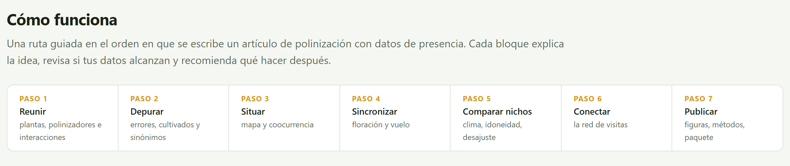
Figura 1.1. La ruta guiada, en el orden en que se escribe un artículo de polinización con datos de presencia. Cada paso agrupa uno o dos bloques.
Paso
Qué se hace
Bloques
1 · Reunir
plantas, polinizadores e interacciones
2
2 · Depurar
errores, cultivados y sinónimos
3
3 · Situar
mapa y coocurrencia
4 y 5
4 · Sincronizar
floración y vuelo
6
5 · Comparar nichos
clima, idoneidad, desajuste
7 y 8
6 · Conectar
la red de visitas
9
7 · Publicar
figuras, métodos, paquete
10
1.3Laboratorio 1: coocurrencia y sesgo de muestreo
El primer laboratorio responde la pregunta que más se equivoca en los estudios con datos de presencia: ¿coinciden la planta y la abeja más de lo esperado? Genera un paisaje de 36 × 24 celdas con un gradiente ambiental. La planta y la abeja ocupan las celdas que les convienen según su óptimo y su amplitud de nicho. Luego alguien muestrea, más cerca de una carretera cuanto mayor es el sesgo, y solo las celdas muestreadas dan registros. Sobre esos registros se corre la prueba exacta de Veech (Capítulo 5) con tres universos distintos, y se compara con la verdad: la misma prueba con las presencias reales, que en el campo nunca se conocen.
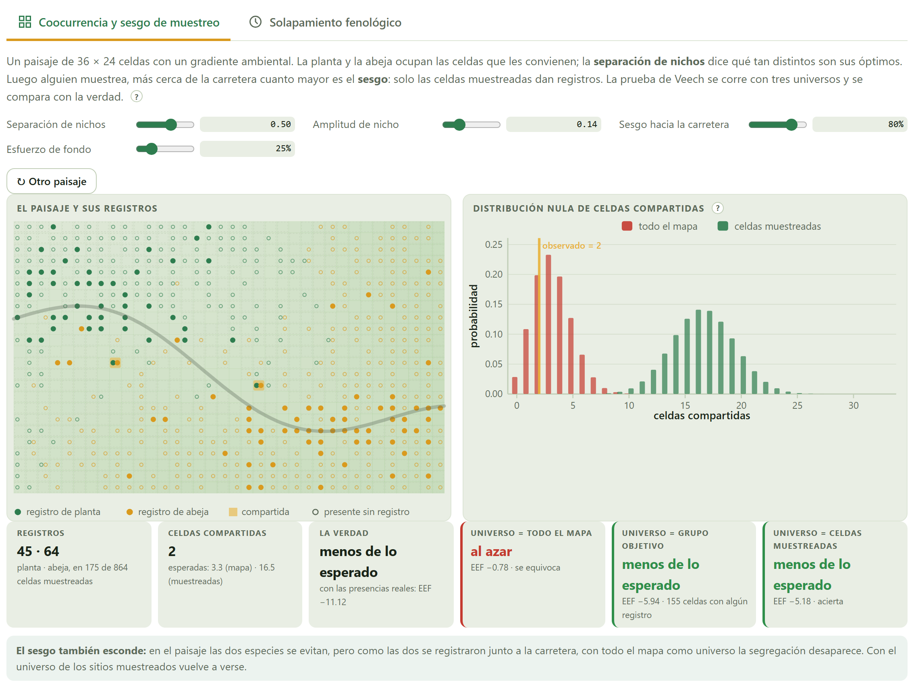
Figura 1.2. El laboratorio con sus valores de inicio: separación de nichos 0.50, amplitud 0.14, sesgo hacia la carretera 80 % y esfuerzo de fondo 25 %. Los puntos llenos son registros; los círculos vacíos, presencias que nadie registró; la franja gris, la carretera.
Control
Qué cambia
Separación de nichos
Qué tan distintos son los óptimos ambientales de la planta y de la abeja, de 0 (el mismo) a 0.8. Con 0 comparten el paisaje; con 0.8 se evitan.
Amplitud de nicho
Qué tanto del gradiente toleran. Amplitudes grandes hacen que casi todo coincida.
Sesgo hacia la carretera
Qué tanto se concentra el muestreo junto a la carretera, de 0 a 100 %.
Esfuerzo de fondo
La probabilidad de muestrear una celda lejos de la carretera.
↻ Otro paisaje
Sortea otro paisaje con los mismos controles. Con los mismos controles y el mismo paisaje, el resultado es siempre el mismo.
Los recuadros de debajo son la lección. Registros y Celdas compartidas dicen lo que se observó —45 registros de planta y 64 de abeja, 2 celdas compartidas en la Figura 1.2— y cuántas se esperarían con dos de los universos. La verdad dice lo que pasa en el paisaje: las dos especies se evitan («menos de lo esperado», EEF −11.12). Los tres recuadros siguientes son la misma prueba con tres universos: todo el mapa la da como «al azar» y se equivoca (en rojo); el grupo objetivo —las 155 celdas donde el muestreador registró la planta, la abeja u otro taxón del mismo grupo— y las celdas muestreadas recuperan la segregación (en verde). El párrafo de abajo lo resume: «El sesgo también esconde: en el paisaje las dos especies se evitan, pero como las dos se registraron junto a la carretera, con todo el mapa como universo la segregación desaparece.»
▸Ejemplo · el sesgo también inventa
Pon la separación de nichos en 0.20, la amplitud en 0.25 y el esfuerzo de fondo en 5 %, con el sesgo en 80 %. En el paisaje, la planta y la abeja se reparten al azar una respecto de la otra (EEF −0.37). Pero sus registros se amontonan junto a la carretera, y con todo el mapa como universo la prueba declara una asociación positiva enorme —54 celdas compartidas contra 9.3 esperadas, EEF 16.38— que no existe. Con el grupo objetivo (EEF −1.68) y con las celdas muestreadas (EEF −0.86) vuelve a salir «al azar». Es la trampa del sesgo, y es el error más común de los artículos con datos de presencia.
Ahora sube el esfuerzo de fondo a 100 % y baja el sesgo a 0: todo el paisaje queda muestreado y el universo de todo el mapa acierta. El grupo objetivo, en cambio, se inclina hacia «menos de lo esperado» (EEF −2.36), porque deja fuera las celdas donde nadie registró nada y con ellas las ausencias compartidas. La app lo explica en el mismo párrafo: el grupo objetivo corrige el sesgo, y cuando no hay sesgo cuesta un poco de exactitud.
✓Regla de decisión · qué universo usar
Si tus registros vienen de GBIF o de colecciones
entonces usa el grupo objetivo (la opción por omisión del Bloque 5): tus registros tienen el sesgo de la carretera.
Si tus registros vienen de un muestreo sistemático (una rejilla o transectos recorridos por igual)
entonces el universo son las celdas que recorriste; «toda la tierra» solo es correcto si muestreaste toda la tierra.
La ficha ? de Sesgo de muestreo lo explica con referencias (Phillips et al. 2009; Kramer-Schadt et al. 2013).
1.4Laboratorio 2: solapamiento fenológico
El segundo laboratorio pone en marcha la estadística circular del Bloque 6. Una planta florece y una abeja vuela alrededor de dos fechas pico, con dos amplitudes; la app sortea registros de los dos calendarios, calcula la fecha media y la concentración de cada uno, prueba si difieren y mide cuánto se solapan mes a mes.
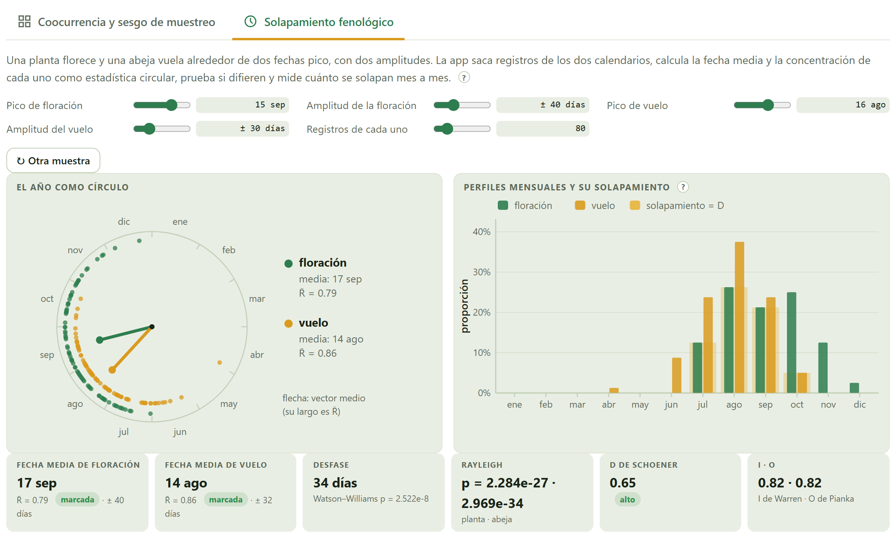
Figura 1.3. Floración con pico el 15 de septiembre (± 40 días) y vuelo con pico el 16 de agosto (± 30 días), 80 registros de cada uno. A la izquierda, cada registro es un punto sobre el círculo del año y la flecha es el vector medio; a la derecha, los perfiles mensuales y su solapamiento.
Recuadro
Qué dice
En la Figura 1.3
Fecha media de floración y de vuelo
La dirección del vector medio, con R̄ —de 0, fechas repartidas en todo el año, a 1, todas el mismo día— y su etiqueta de escala, y la desviación estándar circular en días.
17 sep · R̄ 0.79 marcada · ± 40 días; 14 ago · R̄ 0.86 · ± 32 días
Desfase
Los días entre las dos fechas medias y la prueba de Watson–Williams de que son la misma.
34 días · p = 2.5 × 10⁻⁸
Rayleigh
Si cada calendario es estacional (p pequeña) o uniforme en el año.
p ≈ 10⁻²⁷ y 10⁻³⁴
D de Schoener
La fracción de los dos perfiles mensuales que se comparte, de 0 a 1.
0.65 alto
I · O
La I de Warren y la O de Pianka, dos índices de solapamiento más benévolos con las diferencias pequeñas.
0.82 · 0.82
θTeoría en breve · por qué la D puede ser alta y el desfase significativo
Watson–Williams pregunta si las dos fechas medias son iguales; con 80 registros de cada lado, un desfase de un mes es muy significativo. La D pregunta qué fracción de los calendarios completos se comparte, y dos temporadas de dos meses separadas por uno se siguen solapando mucho. Las dos cosas son ciertas a la vez: la abeja vuela antes que el pico de la floración, pero la mayor parte de la floración ocurre con abejas volando. Un artículo reporta las dos. Mueve el pico de vuelo hacia marzo y verás que la D cae a cero mucho antes de que el desfase llegue a seis meses.
1.5Los bloques, las preguntas y la galería de métodos
Debajo de los laboratorios, la portada ofrece tres índices de la app. Los nueve bloques de trabajo (Figura 1.4) son tarjetas que llevan al bloque con un clic; cada una dice qué hace con un dibujo que resume su figura principal.
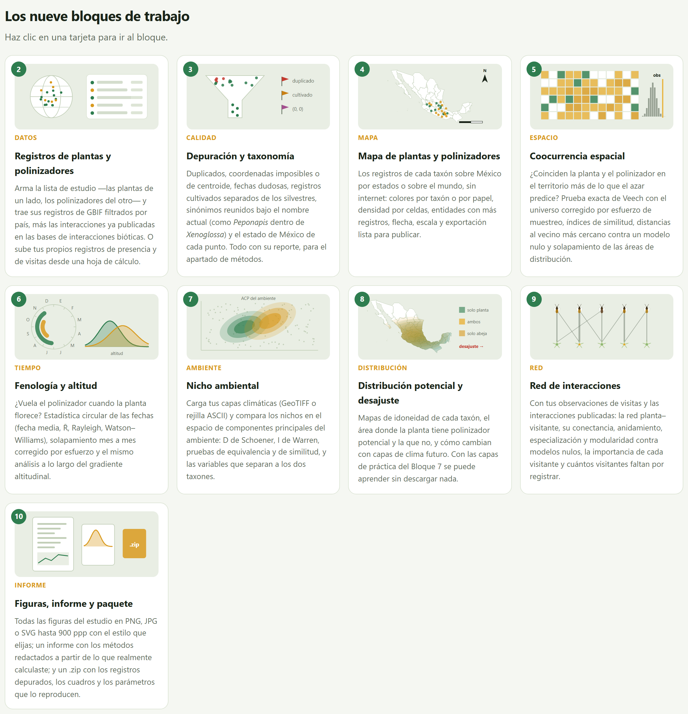
Figura 1.4. Las tarjetas de los bloques 2 a 10. La etiqueta en ámbar dice la dimensión que cada bloque mira: datos, calidad, mapa, espacio, tiempo, ambiente, distribución, red e informe.
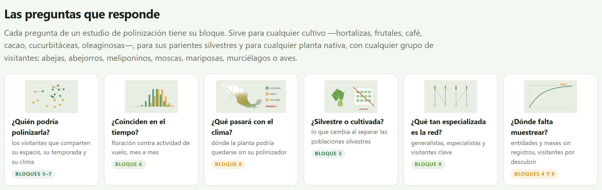
Figura 1.5. Las preguntas que responde, con el bloque que contesta cada una: quién podría polinizarla, si coinciden en el tiempo, qué pasará con el clima, silvestre o cultivada, qué tan especializada es la red y dónde falta muestrear.
La galería de métodos reúne los veinte métodos de la app con su publicación de origen y el bloque donde se usan. Los botones de arriba la filtran por familia: Datos y calidad, Espacio, Tiempo, Ambiente y Redes y diversidad.
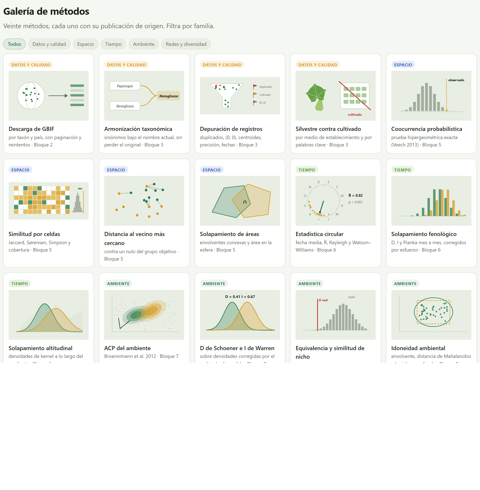
Figura 1.6. La galería de métodos. Cada tarjeta dice el método, en qué consiste en una línea y el bloque donde se usa.
Familia
Métodos
Datos y calidad
Descarga de GBIF por taxón y país · armonización taxonómica · depuración de registros · silvestre contra cultivado
Espacio
Coocurrencia probabilística (Veech 2013) · similitud por celdas (Jaccard, Sørensen, Simpson y cobertura) · distancia al vecino más cercano contra un nulo del grupo objetivo · solapamiento de envolventes convexas
Tiempo
Estadística circular (fecha media, R̄, Rayleigh, Watson–Williams) · solapamiento fenológico mes a mes corregido por esfuerzo · solapamiento altitudinal con densidades de kernel
Ambiente
ACP del ambiente (Broennimann et al. 2012) · D de Schoener e I de Warren · equivalencia y similitud de nicho (Warren et al. 2008) · idoneidad ambiental (envolvente, Mahalanobis y logística con fondo) · mapa de desajuste
Redes y diversidad
Red bipartita · anidamiento NODF (Almeida-Neto et al. 2008) · especialización H₂′ y d′ (Blüthgen et al. 2006) · riqueza de visitantes con rarefacción, Chao1 y cobertura
1.6Cuatro fuentes de datos, cuatro preguntas
Una tabla de la portada dice qué puede afirmar cada tipo de dato y qué no. Es la mejor defensa contra la frase que un revisor tacha: cada fuente contesta una pregunta distinta y un buen artículo combina al menos dos.
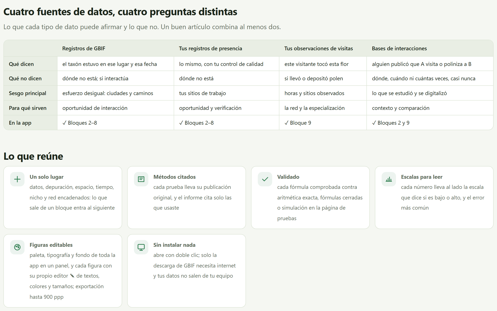
Figura 1.7. Las cuatro fuentes y, debajo, las seis cosas que la app reúne en un solo lugar: el encadenamiento de los bloques, los métodos citados, la validación, las escalas para leer, las figuras editables y el trabajo sin instalar nada.
1.7La teoría, en lenguaje claro
Cinco apartados plegables explican lo que hay que entender antes de descargar el primer registro. Cada uno lleva a la derecha el bloque donde se aplica.
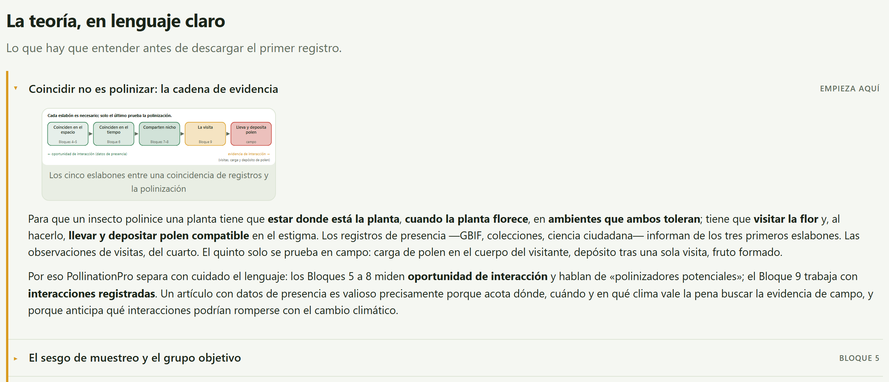
Figura 1.8. El primer apartado, «Coincidir no es polinizar», con el diagrama de los cinco eslabones: coinciden en el espacio (Bloques 4–5), en el tiempo (Bloque 6), comparten nicho (Bloques 7–8), la visita (Bloque 9) y el transporte y depósito de polen (campo).
Apartado
Qué explica
Coincidir no es polinizar: la cadena de evidencia(empieza aquí)
Los cinco eslabones y por qué los Bloques 5 a 8 hablan de «polinizadores potenciales» y el 9 de interacciones registradas.
El sesgo de muestreo y el grupo objetivo(Bloque 5)
Por qué los registros coinciden donde se muestreó más, la solución del grupo objetivo y la distribución hipergeométrica.
El año es un círculo(Bloque 6)
La fecha como ángulo, el vector medio y R̄, Rayleigh, Watson–Williams y los tres índices de solapamiento.
El nicho en el espacio ambiental(Bloques 7 y 8)
El método de Broennimann et al. (2012), las pruebas de Warren et al. (2008) y la idea del desajuste.
Cultivos, parientes silvestres y sus polinizadores(para qué sirve)
Seis sistemas de cultivo con sus visitantes y su pregunta típica, por qué separar las plantas sembradas de las silvestres y el ejemplo de Peponapis, subgénero de Xenoglossa desde Freitas et al. (2023).
La fórmula de arriba es la de la prueba de Veech: si la planta ocupa N₁ de N celdas y el visitante N₂, y se colocaran al azar uno respecto del otro, el número de celdas compartidas seguiría la distribución hipergeométrica. Es la única fórmula que conviene recordar del manual, porque de ella depende la lectura de todo el Capítulo 5.
1.8Cómo citar y las referencias
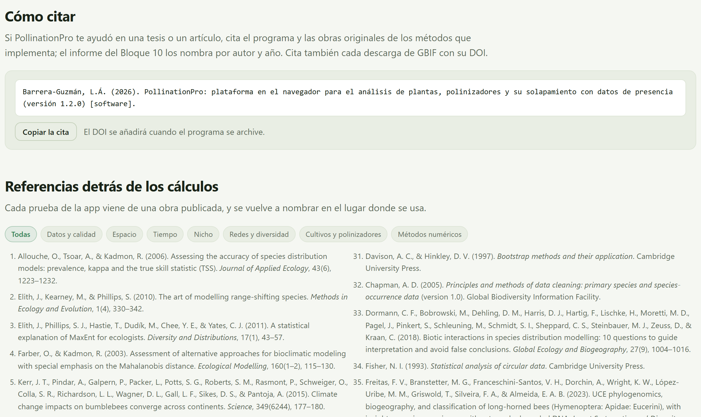
Figura 1.9. La cita del programa, con la versión que tienes abierta, y la lista de las 60 referencias detrás de los cálculos, filtrable por familia.
Copiar la cita la copia al portapapeles en el idioma de la interfaz. La cita del programa no basta: cada método se cita a su obra original —el informe del Bloque 10 los nombra por autor y año, y solo los que usaste—, y cada descarga de GBIF se cita con su DOI. La lista de referencias se filtra en siete familias: datos y calidad, espacio, tiempo, nicho, redes y diversidad, cultivos y polinizadores, y métodos numéricos. El Apéndice E la reproduce completa.
iLas figuras de la portada también se exportan
Las figuras de los dos laboratorios tienen sus botones ⤓ y ✎ como cualquier otra. Sirven para una clase o una presentación: el laboratorio de coocurrencia, con sesgo alto y bajo, es la forma más rápida de explicar a un comité por qué un análisis corrige por esfuerzo de muestreo.
2
Bloque 2 · Datos
Registros de plantas y visitantes
Qué plantas y qué visitantes entran al estudio, y todos sus registros: los de GBIF, las interacciones ya publicadas y los tuyos. Nada se analiza todavía: aquí se reúne, se cuenta y se revisa qué llegó. Es el único bloque que usa internet, y solo cuando se lo pides.
2.1De dónde vienen los datos
2.2La lista de estudio
2.3Los registros de GBIF
2.4Las interacciones ya publicadas
2.5Tus propios datos
2.6Los datos de práctica
2.7Lo que hay, y el proyecto
2.8Los avisos de este bloque
2.1De dónde vienen los datos
Un estudio de polinización con datos de presencia combina cuatro fuentes que dicen cosas distintas (sección 1.6). El Bloque 2 las reúne en cinco tarjetas: la lista de estudio, los registros de GBIF, las interacciones publicadas, tus propios datos y un resumen de lo que hay.
Fuente
Qué aporta
Dónde se usa
GBIF
Registros de presencia de colecciones, herbarios, observaciones ciudadanas y proyectos, con coordenadas, fecha, tipo de registro y conjunto de datos de origen.
Bloques 3 a 8
Base de interacciones bióticas
Pares planta–visitante publicados («visita las flores de», «poliniza a»), casi nunca con lugar ni fecha.
Bloque 9
Tus registros de presencia
Lo mismo que GBIF, con tu control de calidad: plantas e insectos que viste, con su punto.
Bloques 3 a 8
Tus observaciones de visitas
Pares planta–visitante que observaste, con cuántas visitas y, si puedes, sitio y fecha.
Bloque 9
2.2La lista de estudio
Todo empieza con los nombres. Se escriben a cualquier nivel —especie (Coffea arabica), género (Bombus) o familia— en la columna de Plantas o en la de Visitantes, y cada nombre es una entrada de la lista: un género reúne los registros de todas sus especies. Varios nombres se separan con comas o punto y coma. O se parte de uno de los siete sistemas de ejemplo, que son puntos de partida, no recomendaciones: cucurbitáceas de México y abejas de la calabaza; café y abejas; cacao y mosquitas polinizadoras (Forcipomyia); solanáceas y abejorros; aguacate y sus visitantes; agaves y murciélagos nectarívoros; y vainilla y abejas de las orquídeas.
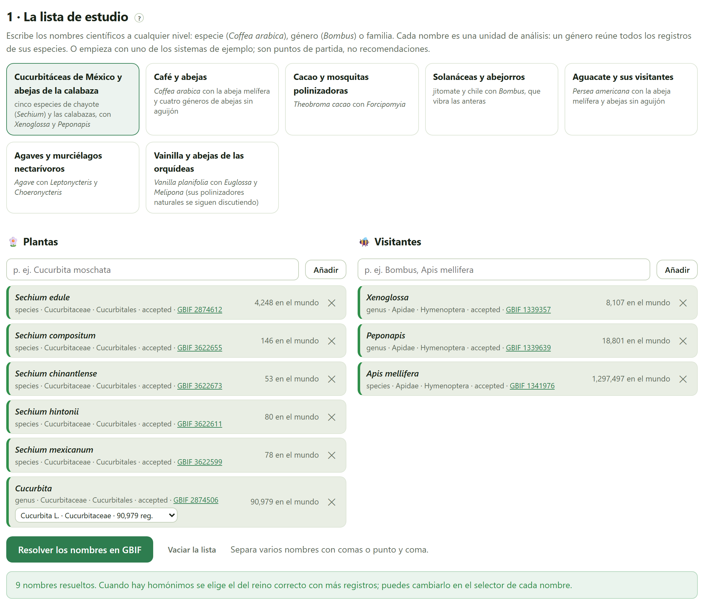
Figura 2.1. El sistema de las cucurbitáceas de México resuelto en GBIF (consulta real del 27 de septiembre de 2026; tus números serán otros). Cada entrada muestra su rango, familia, orden, estado taxonómico y la clave de GBIF con su enlace; Cucurbita muestra además un selector, porque GBIF tiene más de un nombre con esa grafía.
Resolver los nombres en GBIF busca cada nombre en el esqueleto taxonómico de GBIF. Cuando hay homónimos —el mismo nombre en dos reinos, o un nombre fósil junto al vivo— la app elige el del reino que corresponde al papel (plantas o animales) con más registros, y deja un selector para cambiarlo. En la Figura 2.1, Cucurbita L. tiene 90,979 registros y un homónimo de 180. Cada nombre queda con su número de registros en el mundo; después de contar con los países elegidos (sección 2.3), el número pasa a ser el de esos países.
Lo que puede decir un nombre
Qué significa y qué hacer
accepted
El nombre es aceptado en el esqueleto de GBIF. Es lo normal.
synonym o doubtful
GBIF lo considera sinónimo o dudoso. Los registros se piden por la clave del nombre elegido; revisa si conviene escribir el nombre aceptado.
GBIF no reconoce el nombre: revisa la ortografía
No hubo coincidencia. Casi siempre es un error de tecleo o un nombre muy reciente.
datos de práctica (sin resolver en GBIF)
La entrada viene de los datos ficticios (sección 2.6): no tiene clave de GBIF y no la necesita.
!Elegir un sistema de ejemplo empieza un estudio nuevo
Al hacer clic en uno de los siete sistemas, la lista, los registros y las interacciones publicadas se reemplazan por los del ejemplo, y los países se fijan a los suyos. Si ya tenías un estudio, guárdalo antes como proyecto (sección 2.7). Para quitar un solo nombre usa su ✕: se lleva sus registros y la app lo dice. Vaciar la lista borra todo el estudio.
2.3Los registros de GBIF
La segunda tarjeta pide los registros de cada nombre resuelto, solo con coordenadas y filtrados por país desde el servidor. Elegir los países aquí es mucho mejor que descargar el mundo y filtrar después: el conteo ya llega filtrado y la descarga es más corta.
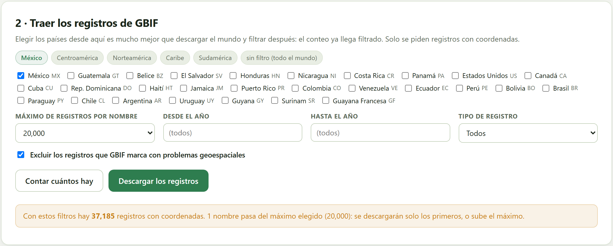
Figura 2.2. Los filtros de la descarga y el resultado de Contar cuántos hay para la lista de las cucurbitáceas en México: 37,185 registros con coordenadas, y un nombre (Apis mellifera) que pasa del máximo de 20,000.
Control
Qué hace
Regiones y países
Los botones México, Centroamérica, Norteamérica, Caribe y Sudamérica marcan o desmarcan sus países; las casillas se tocan una por una. sin filtro (todo el mundo) las desmarca todas.
Máximo de registros por nombre
5,000, 20,000, 50,000 o 99,000. Un nombre con más se descarga hasta el máximo y lo marca como recortado.
Desde el año y Hasta el año
Vacíos, se piden todos los años.
Tipo de registro
Todos, solo ejemplares de colección, solo observaciones, o ejemplares y observaciones sin fósiles ni registros de tipo desconocido.
Excluir los registros que GBIF marca con problemas geoespaciales
Marcada por omisión: GBIF ya detectó en ellos coordenadas imposibles, invertidas o fuera del país. El Bloque 3 revisa además lo que GBIF no marca.
Contar cuántos hay
Pregunta cuántos registros hay con esos filtros, sin descargar. Conviene hacerlo siempre antes.
Descargar los registros · Detener
Descarga nombre por nombre, en páginas de 300 con reintentos, con una barra de progreso por nombre. Detener corta la descarga; lo ya bajado se conserva.
Al terminar, la app dice cuántos registros llegaron y recuerda que GBIF pide citar cada descarga con su DOI. Volver a descargar un nombre reemplaza solo sus registros de GBIF, nunca los tuyos: si un nombre falló o se detuvo, basta con repetir la descarga.
!La descarga de la app es para explorar; la del artículo se repite en GBIF
La app pide los registros a la interfaz pública de GBIF, que no emite un DOI. Para el artículo final, repite la descarga en el portal de GBIF con los mismos filtros —los guarda el registro de cálculo del Bloque 10— y cita el DOI que te dé. El informe lista además los conjuntos de datos que aportaron registros depurados, porque GBIF pide acreditar a cada uno.
✓Regla de decisión · cuántos registros bajar
Si un visitante generalista (la abeja melífera) pasa del máximo
entonces no hace falta subirlo: 20,000 registros bien repartidos bastan para su mapa, su calendario y su nicho. Anótalo en los métodos.
Si la planta o el visitante que te importa pasa del máximo
entonces súbelo a 50,000 o 99,000, o acota los años: un recorte deja fuera registros al azar del orden en que GBIF los entrega.
Si un nombre tiene menos de 20 registros en el área
entonces sus pruebas serán débiles: considera reunirlo con su género (una sola entrada) o ampliar el área.
2.4Las interacciones ya publicadas
Buscar interacciones publicadas consulta una base pública de interacciones bióticas, que reúne lo publicado en artículos, bases y colecciones, en las dos direcciones: los visitantes de las flores de cada planta de la lista y las plantas cuyas flores visita cada visitante. El resultado es una tabla de pares con el grupo del visitante (abeja, avispa, mosca sírfida, mosca, mariposa o polilla, escarabajo, murciélago, ave), cuántos registros lo respaldan y si al menos uno de ellos lo llama polinización y no solo visita.
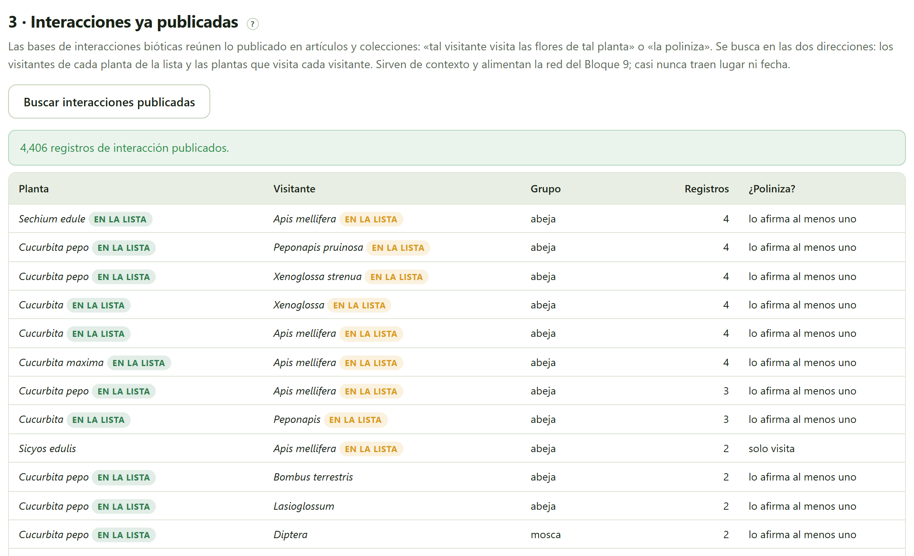
Figura 2.3. Las primeras filas de 4,406 registros de interacción publicados para la lista de las cucurbitáceas (consulta real). La etiqueta en la lista marca los nombres que pertenecen a una entrada de tu lista; Sicyos edulis, un sinónimo antiguo del chayote, no la lleva.
Se piden hasta 4,000 registros por nombre. La tabla muestra hasta 300 pares ordenados por número de registros; ⤓ Interacciones (.csv), al pie, descarga todos los registros con su tipo, su fuente (cuando la base la da) y sus coordenadas (cuando las tiene). Cuando la base devuelve la cita del estudio de origen, aparece además la columna Fuentes con cuántos estudios respaldan cada par.
iLo que la tabla enseña antes del análisis
En la Figura 2.3 ya hay tres lecturas útiles. Hay registros publicados de Sechium edule con la abeja melífera, pero ninguno con las abejas de la calabaza: el vínculo chayote–Xenoglossa que el estudio de práctica explora está sin documentar. Algunas plantas aparecen con nombres que ya no se usan (Sicyos edulis): el Bloque 9 puede aplicarles los sinónimos del Bloque 3. Y un mismo par aparece a nivel de especie y de género (Cucurbita pepo y Cucurbita): el Bloque 9 permite reunir plantas y visitantes por género.
2.5Tus propios datos
La cuarta tarjeta importa dos clases de tabla, cada una con su pestaña. Registros de presencia: una fila por planta o insecto visto, con taxón, latitud y longitud y, si los tienes, fecha, altitud, localidad y si es silvestre o cultivado. Observaciones de visitas: una fila por par planta–visitante observado, con cuántas visitas y, si puedes, sitio y fecha. Acepta .csv, .txt, .tsv y .xlsx —en UTF-8 o Windows-1252, con cualquier separador— o el texto que se pega al copiar celdas de una hoja de cálculo. ⤓ Descargar una plantilla vacía da una tabla con los títulos que la app reconoce.
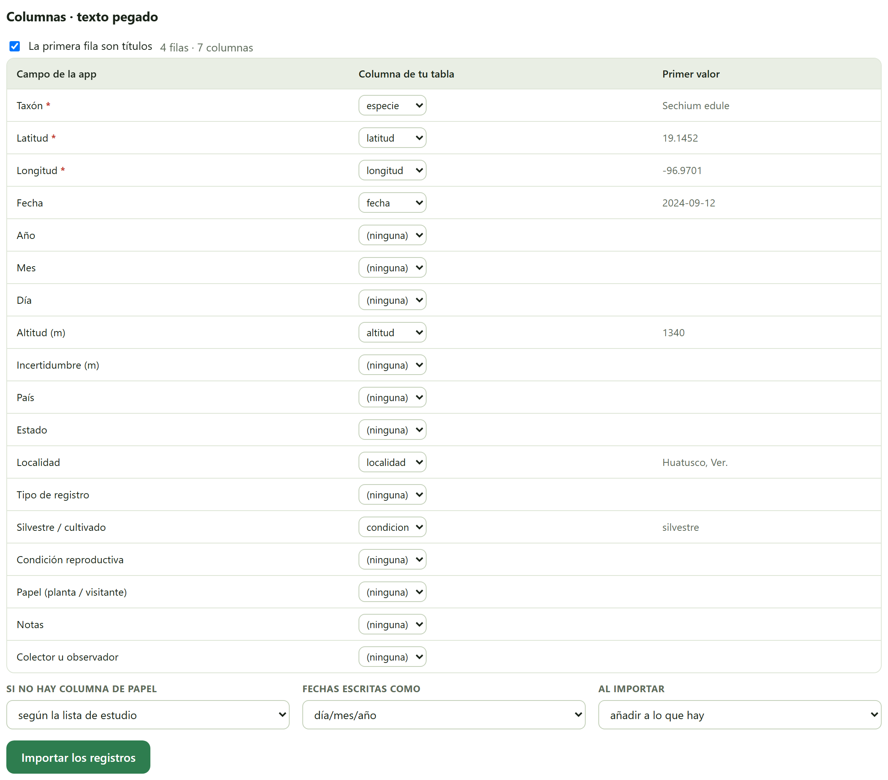
Figura 2.4. Una tabla de cuatro registros pegada desde una hoja de cálculo. La app reconoció sola las columnas especie, latitud, longitud, fecha, altitud, localidad y condicion; el primer valor de cada una permite comprobarlo de un vistazo. Los campos con asterisco son obligatorios.
Tabla
Campos que reconoce (por su título, en español o inglés)
Registros de presencia
taxón*, latitud*, longitud*, fecha (o año, mes y día por separado), altitud, incertidumbre, país, estado, localidad, tipo de registro, silvestre/cultivado, condición reproductiva, papel (planta/visitante), notas, colector u observador. Los títulos de Darwin Core (scientificName, decimalLatitude, eventDate…) se reconocen igual.
Observaciones de visitas
planta*, visitante*, número de visitas (1 si falta), fecha (o año, mes y día), sitio, latitud, longitud, tipo de interacción, notas.
Debajo de la asignación hay tres opciones. Si no hay columna de papel: el papel de cada registro se toma de la lista de estudio (lo normal), o todos se marcan como plantas o todos como visitantes. Fechas escritas como: día/mes/año o mes/día/año, para las fechas con barras; las de tipo 2024-09-12 no son ambiguas. Al importar: añadir a lo que hay o reemplazar tus datos anteriores de esa clase (nunca los de GBIF).
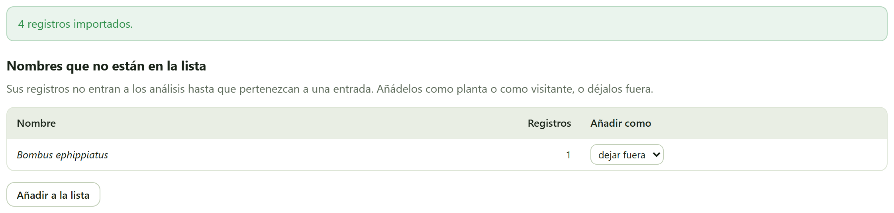
Figura 2.5. Tras importar, la app avisa de los nombres que ninguna entrada de la lista reclama. Xenoglossa gabbii entró sola porque la lista tiene la entrada Xenoglossa; Bombus ephippiatus no, y espera a que decidas.
Los registros de un nombre que no está en la lista no entran a los análisis hasta que pertenezcan a una entrada. En la tabla de Nombres que no están en la lista se elige, para cada uno, añadirlo como planta, como visitante o dejarlo fuera, y Añadir a la lista lo aplica.
2.6Los datos de práctica
Bajo la lista, el desplegable ¿Sin internet o solo para practicar? Datos ficticios generados por el programa carga uno de los dos estudios de práctica (sección I.7) sin consultar internet: Cucurbitáceas y abejas de la calabaza o Café y abejas sin aguijón. Con ellos se reproduce este manual.
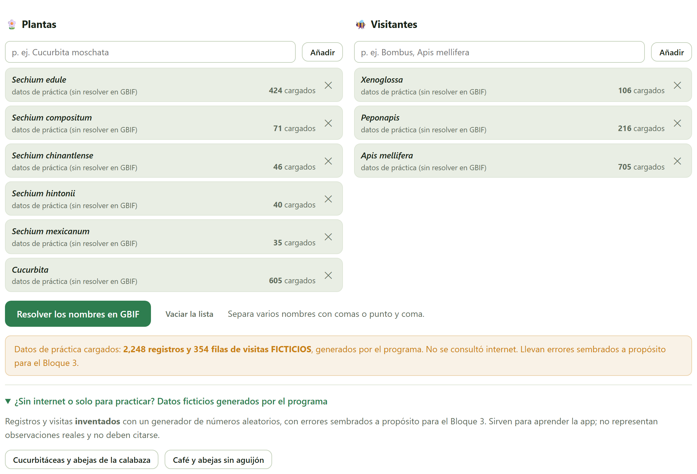
Figura 2.6. El estudio de práctica de las cucurbitáceas: seis plantas y tres visitantes marcados como «datos de práctica (sin resolver en GBIF)», con sus registros cargados. El mensaje lo dice sin rodeos: 2,248 registros y 354 filas de visitas ficticios, con errores sembrados a propósito para el Bloque 3.
2.7Lo que hay, y el proyecto
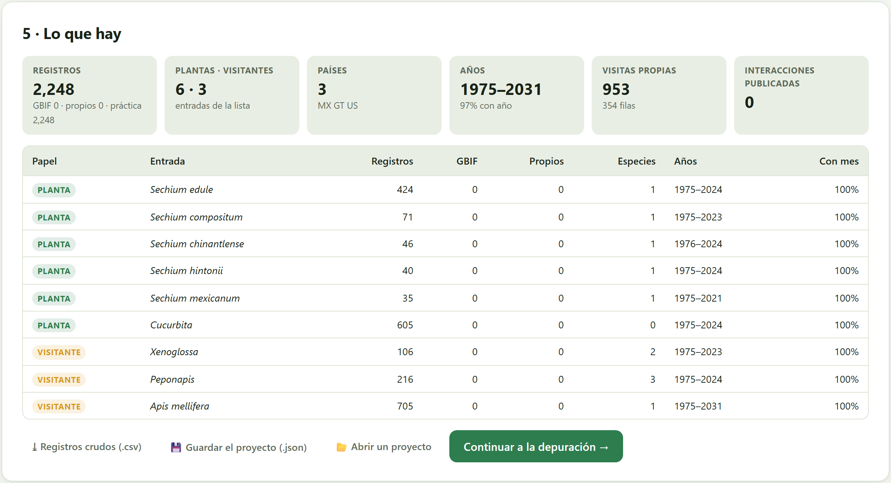
Figura 2.7. El resumen del estudio de práctica. La tabla da, por entrada, el papel, los registros (de GBIF y propios), cuántas especies reúne, el intervalo de años y la fracción con mes.
Recuadro
Qué dice
En la práctica
Registros
El total y su origen: GBIF, propios, práctica.
2,248 · práctica 2,248
Plantas · Visitantes
Las entradas de la lista con cada papel.
6 · 3
Países
En cuántos países caen los registros, con sus códigos.
3 · MX GT US
Años
El intervalo y la fracción de registros con año. Un año futuro es el primer indicio de un error.
1975–2031 · 97 % con año
Visitas propias
Las visitas importadas y cuántas filas las describen.
953 en 354 filas
Interacciones publicadas
Los registros traídos de la base de interacciones.
0
Los botones del pie: ⤓ Registros crudos (.csv) descarga todos los registros tal como llegaron; 💾 Guardar el proyecto (.json) guarda la lista, los registros, las visitas, las interacciones y los filtros de la descarga en un solo archivo; 📂 Abrir un proyecto lo recupera en cualquier computadora; Continuar a la depuración → lleva al Bloque 3.
iGuarda el proyecto al terminar de descargar
El navegador ya recuerda el estudio (sección I.5), pero el proyecto .json es lo único que sobrevive a un cambio de computadora o a borrar los datos del navegador. Y es lo que permite repetir el análisis con exactamente los mismos registros meses después, cuando GBIF ya tenga otros.
2.8Los avisos de este bloque
Mensaje
Qué significa y qué hacer
Primero resuelve los nombres en GBIF (sección 1)
Contar y descargar necesitan la clave de GBIF de cada nombre.
No se pudo consultar GBIF… Revisa tu conexión, o practica con los datos ficticios de abajo
Sin internet o con el servicio caído. Los datos de práctica funcionan sin conexión.
N nombres pasan del máximo elegido
Se descargarán solo los primeros registros de esos nombres. Sube el máximo o acota los años (regla de la sección 2.3).
Descarga terminada… Algunos nombres fallaron o se detuvieron
Repite la descarga: solo se reemplazan los registros de GBIF de esos nombres. Un nombre cortado conserva lo que alcanzó a bajar y lo marca («corte: N guardados»).
N registros de interacción publicados; N consultas fallaron
Alguna de las consultas a la base de interacciones no respondió. Repite la búsqueda.
Falta asignar: …
Algún campo obligatorio (taxón, latitud y longitud; o planta y visitante) no tiene columna. Elígela en la asignación.
N registros importados. N filas sin taxón o sin coordenadas legibles se omitieron (la primera: fila N)
Esas filas no se importaron. Revisa la tabla original.
Ese archivo no es un proyecto de PollinationPro
El .json no viene del botón de guardar de esta app.
Se recuperó la sesión anterior…
No es un aviso: el navegador recordó el estudio de la última vez.
3
Bloque 3 · Depuración y taxonomía
Depuración y taxonomía
Los registros que llegan de cientos de colecciones traen errores que, sin depurar, se vuelven resultados. Aquí decides qué se quita, qué solo se marca y cómo se nombran las unidades de análisis: quince reglas de calidad, las plantas cultivadas decididas planta por planta, el área de estudio, los sinónimos y la unidad. El reporte sale redactado para el apartado de métodos.
3.1Por qué depurar
3.2Las quince reglas
3.3Plantas cultivadas y área de estudio
3.4Sinónimos y unidades de análisis
3.5El reporte
3.6Revisar y descargar los registros
3.7Los avisos de este bloque
3.1Por qué depurar
Un solo registro en el centro geográfico de México —el lugar que se escribe cuando solo se sabe el país— puede crear una coincidencia entre dos especies que nunca se han visto juntas. Un chayote de traspatio en la Ciudad de México ensancha el nicho climático de la especie hacia donde nunca vivió silvestre. Y una abeja registrada como Peponapis en una colección y como Xenoglossa en otra se parte en dos unidades que no se reconocen. Depurar no es un paso de trámite: es la primera decisión científica del estudio.
La app aplica las comprobaciones en las que la literatura de depuración de registros coincide (Chapman 2005; Zizka et al. 2020) y deja cada decisión a la vista, con su conteo. Nada se aplica hasta pulsar Depurar y aplicar, y todo se puede rehacer: los registros crudos del Bloque 2 no se tocan.
3.2Las quince reglas
Para cada regla se elige si quita el registro, solo lo marca (sigue en los análisis, con la marca en la tabla) o no se aplica. La columna de la derecha dice a cuántos registros alcanza con los parámetros actuales, y cuántos quitaría.
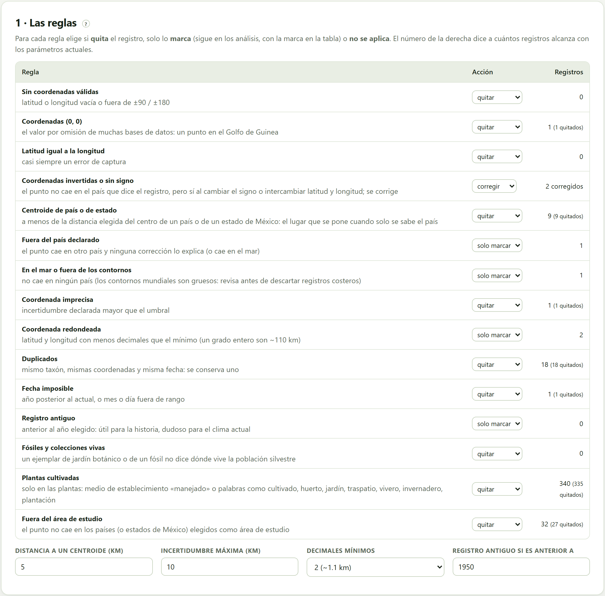
Figura 3.1. Las quince reglas con sus acciones por omisión y lo que alcanzan en el estudio de práctica, y los cuatro parámetros de abajo: distancia a un centroide, incertidumbre máxima, decimales mínimos y año del registro antiguo.
Regla
Qué detecta
Por omisión
Práctica
Sin coordenadas válidas
Latitud o longitud vacía o fuera de ±90 / ±180.
quitar
0
Coordenadas (0, 0)
El valor por omisión de muchas bases: un punto en el Golfo de Guinea.
quitar
1
Latitud igual a la longitud
Casi siempre un error de captura.
quitar
0
Coordenadas invertidas o sin signo
El punto no cae en el país que dice el registro, pero sí al cambiar el signo o intercambiar latitud y longitud. Esta regla no quita: corrige.
corregir
2
Centroide de país o de estado
A menos de la distancia elegida del centro de un país o de un estado de México, con dos definiciones de «centro» (sección 3.2.1).
quitar
9
Fuera del país declarado
El punto cae en otro país y ninguna corrección lo explica, o cae en el mar.
solo marcar
1
En el mar o fuera de los contornos
No cae en ningún país. Los contornos mundiales son gruesos: revisa antes de quitar registros costeros.
solo marcar
1
Coordenada imprecisa
Incertidumbre declarada mayor que el umbral (10 km).
quitar
1
Coordenada redondeada
Latitud y longitud con menos decimales que el mínimo (2, unos 1.1 km). Un grado entero son ~110 km.
solo marcar
2
Duplicados
Mismo taxón, mismas coordenadas y misma fecha: se conserva uno.
quitar
18
Fecha imposible
Año posterior al actual, o mes o día fuera de rango.
quitar
1
Registro antiguo
Anterior al año elegido (1950): útil para la historia, dudoso para el clima actual.
solo marcar
0
Fósiles y colecciones vivas
Un ejemplar de jardín botánico o un fósil no dice dónde vive la población silvestre.
quitar
0
Plantas cultivadas
Solo en las plantas: medio de establecimiento «manejado» o palabras como cultivado, huerto, jardín, traspatio, vivero, invernadero, plantación, milpa, cafetal (sección 3.3).
quitar
340
Fuera del área de estudio
El punto no cae en los países —o estados de México— elegidos como área (sección 3.3).
quitar
32
Los siete errores sembrados en el estudio de práctica salen todos: el (0, 0), la coordenada invertida y la longitud sin signo (las dos corregidas), el centro de México, la coordenada redondeada, el año 2031 y el registro con 25 km de incertidumbre, además de los 18 duplicados. La regla del centroide alcanza nueve registros y no solo el sembrado: con puntos sorteados alrededor de centros inventados, ocho cayeron a menos de 5 km del centro de algún estado. En datos reales pasa lo mismo, y por eso la distancia es un parámetro.
3.2.1 Dos definiciones de «centro»
El lugar que se escribe cuando solo se conoce el país o el estado no es siempre el mismo. Unas bases usan el centroide de área del polígono; otras, el centro del rectángulo envolvente. El «centro de México» que circula como marcador, en 23.6345° N y 102.5528° O, es el segundo, y está a decenas de kilómetros del primero. La app calcula los dos para cada país del mundo y para cada uno de los 32 estados de México a partir de sus propios contornos, y la regla alcanza un registro si cae cerca de cualquiera de ellos.
✓Regla de decisión · quitar o solo marcar
Si el error hace que el punto no represente dónde estuvo el organismo (0, 0; centroide; fósil; colección viva; fecha imposible)
entonces quítalo: dejarlo mueve los mapas, las celdas y el nicho.
Si el registro es dudoso pero puede ser correcto (redondeado, antiguo, costero)
entonces márcalo y revísalo en la tabla de la sección 3.6 antes de decidir. Si tu celda de análisis es de 0.25° o más, una coordenada con dos decimales no cambia nada.
Si una regla alcanza a muchos registros de una sola entrada
entonces mira la tabla «Por entrada de la lista»: puede ser una colección con un problema sistemático, y conviene saberlo antes de quitarla entera.
3.3Plantas cultivadas y área de estudio
La mayoría de los registros de un cultivo son de plantas sembradas, cuya distribución refleja la agricultura y no el nicho natural. Qué hacer con ellas depende de la pregunta: si estudias el cultivo tal como se siembra (el café en sus fincas), conserva sus registros cultivados; si estudias las poblaciones silvestres o los parientes silvestres, quítalos. Por eso cada planta se decide por separado, y la app propone conservar cuando más de la mitad de los registros de esa planta son cultivados.
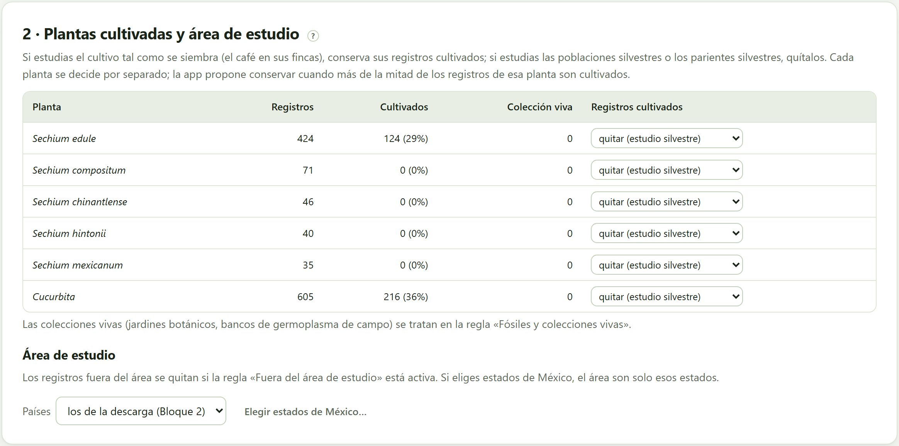
Figura 3.2. Las plantas del estudio de práctica. Sechium edule tiene 124 registros cultivados (29 %) y Cucurbita 216 (36 %); los cuatro parientes silvestres, ninguno. Con menos de la mitad cultivados, la app propone quitarlos: el estudio es de las poblaciones silvestres.
Un registro se considera cultivado si su medio de establecimiento es «manejado», «cultivado», «introducido» o «plantado», o si su localidad o sus notas dicen cultivado, sembrado, plantado, huerto, huerta, jardín, traspatio, vivero, invernadero, mercado, parcela, huerto frutal, milpa, cafetal, plantación, ornamental o escapado de cultivo, en español o inglés. La columna Colección viva cuenta aparte los ejemplares de jardines botánicos y bancos de germoplasma de campo, que se tratan en la regla «Fósiles y colecciones vivas».
!Los registros cultivados sin etiqueta no se detectan
La regla solo ve lo que el registro dice. Un chayote de huerto registrado sin notas pasa como silvestre. Con cultivos de amplia siembra, revisa en el mapa del Bloque 4 los puntos en ciudades y en zonas agrícolas, y considera acotar el área de estudio a la distribución natural conocida.
El área de estudio. Los registros fuera del área se quitan si la regla «Fuera del área de estudio» está activa. El selector Países ofrece los de la descarga (Bloque 2) —lo normal— o todos (sin área). Elegir estados de México… abre la lista de los 32 estados: si eliges algunos, el área son solo esos. En el estudio de práctica el área es México, y la regla quita 27 registros, casi todos del lado guatemalteco de la frontera sur.
3.4Sinónimos y unidades de análisis
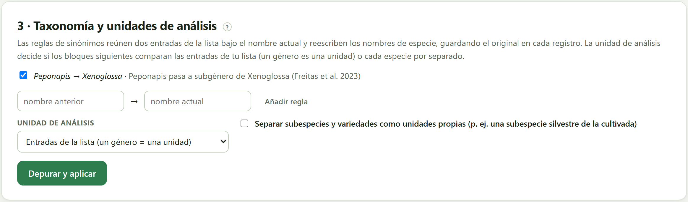
Figura 3.3. La taxonomía del estudio de práctica. La app propuso sola la regla Peponapis → Xenoglossa porque las dos están en la lista, con la obra que la sustenta.
Las reglas de sinónimos reúnen dos entradas de la lista bajo el nombre actual y reescriben los nombres de especie —Peponapis crassidentata pasa a Xenoglossa crassidentata—, guardando el nombre original en cada registro. La app trae las reglas que conoce y las propone cuando las dos entradas están en la lista; la de las abejas de la calabaza sigue a Freitas et al. (2023), que sitúan a Peponapis como subgénero de Xenoglossa. Cada regla se activa o desactiva con su casilla, y se pueden añadir otras escribiendo el nombre anterior y el nombre actual y pulsando Añadir regla.
Unidad de análisis
Qué comparan los bloques siguientes
Entradas de la lista (un género = una unidad)
Cada entrada es una unidad: Cucurbita reúne todas sus especies y Xenoglossa, tras el sinónimo, reúne cinco. Es lo adecuado cuando la pregunta es por un grupo funcional (las abejas de la calabaza) o cuando las especies tienen pocos registros.
Especies (cada especie por separado)
Cada especie es una unidad, aunque la lista tenga un género. Es lo adecuado cuando la pregunta es por especies concretas y cada una tiene registros suficientes.
Separar subespecies y variedades como unidades propias
Con especies como unidad, separa además las subespecies y variedades (por ejemplo, una subespecie silvestre de la cultivada).
Al terminar, Depurar y aplicar corre las reglas, aplica los sinónimos, asigna las unidades y abre el reporte.
3.5El reporte
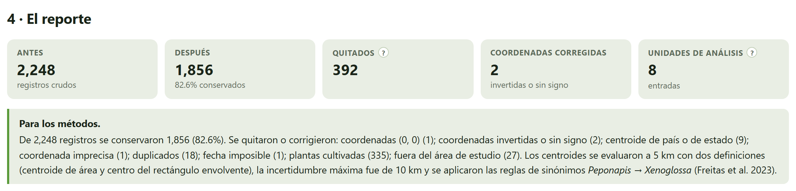
Figura 3.4. El reporte del estudio de práctica: de 2,248 registros crudos se conservan 1,856 (82.6 %), se quitan 392, se corrigen 2 coordenadas y quedan 8 unidades de análisis.
El recuadro Para los métodos es un párrafo listo para copiar. Dice cuántos registros se conservaron, qué reglas quitaron o corrigieron cuántos, con qué distancia y qué dos definiciones se evaluaron los centroides, qué incertidumbre máxima se usó y qué reglas de sinónimos se aplicaron, con su referencia. El informe del Bloque 10 lo retoma con las citas de los métodos de depuración.
▸Ejemplo · el párrafo del estudio de práctica
«De 2,248 registros se conservaron 1,856 (82.6%). Se quitaron o corrigieron: coordenadas (0, 0) (1); coordenadas invertidas o sin signo (2); centroide de país o de estado (9); coordenada imprecisa (1); duplicados (18); fecha imposible (1); plantas cultivadas (335); fuera del área de estudio (27). Los centroides se evaluaron a 5 km con dos definiciones (centroide de área y centro del rectángulo envolvente), la incertidumbre máxima fue de 10 km y se aplicaron las reglas de sinónimos Peponapis → Xenoglossa (Freitas et al. 2023).»
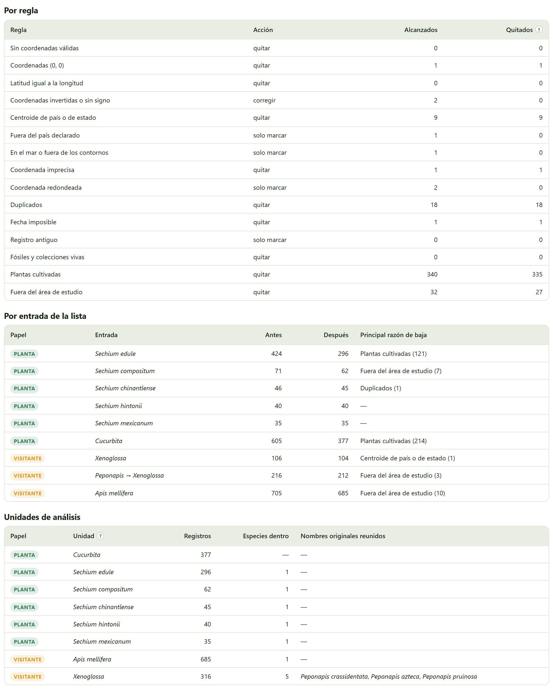
Figura 3.5. Las tres tablas del reporte. La de unidades muestra que Xenoglossa quedó con 316 registros de cinco especies y reúne los nombres originales Peponapis crassidentata, P. azteca y P. pruinosa.
Tabla
Para qué sirve
Por regla
La acción de cada regla, cuántos registros alcanzó y cuántos quitó. Una regla puede alcanzar más de los que quita porque otra ya los había quitado: Plantas cultivadas alcanzó 340 y quitó 335.
Por entrada de la lista
Los registros antes y después y la principal razón de baja. En la práctica, el chayote pasa de 424 a 296 (sobre todo por cultivadas, 121) y Cucurbita de 605 a 377 (cultivadas, 214). La fila de Peponapis dice «Peponapis → Xenoglossa».
Unidades de análisis
Las unidades que verán los Bloques 4 a 8, con sus registros depurados, cuántas especies reúnen y qué nombres originales se juntaron en cada una.
✓Regla de decisión · cuánto se puede perder
Si la depuración conserva más del 80 % de los registros
entonces es lo habitual con datos de GBIF bien filtrados; repórtalo y sigue.
Si conserva entre 50 y 80 %
entonces mira qué regla quita más: si son cultivadas, es una decisión de la pregunta, no un problema de calidad.
Si conserva menos de la mitad, o una unidad queda con menos de 20 registros
entonces revisa los parámetros (distancia al centroide, incertidumbre, área) y considera reunir especies en su género.
Son guías: una especie rara con 15 registros buenos vale más que una común con 1,500 dudosos.
3.6Revisar y descargar los registros
El selector Mostrar filtra la tabla de registros: todos los quitados, las coordenadas corregidas o los de una regla concreta, con su conteo. Cada fila da la unidad, la latitud y la longitud (ya corregidas), el país que dice el registro y el país donde cae, el estado de México, la fecha, el tipo de registro, las marcas de las reglas —con ✕ si lo quitaron— y la localidad o las notas.
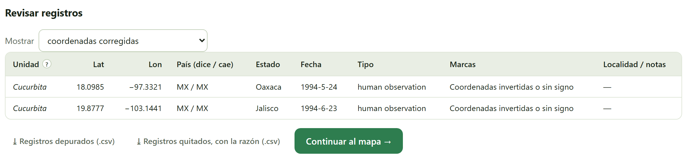
Figura 3.6. Las dos coordenadas corregidas del estudio de práctica, ya en su lugar: una en Oaxaca y otra en Jalisco. Abajo, las dos descargas y el paso al mapa.
⤓ Registros depurados (.csv) descarga los que entran al análisis, con su unidad, el nombre original y el armonizado, y el estado de México; ⤓ Registros quitados, con la razón (.csv) descarga los demás con la regla que los quitó. Los dos son el material suplementario que un revisor espera ver.
3.7Los avisos de este bloque
Mensaje
Qué significa y qué hacer
Primero hacen falta registros
El Bloque 2 está vacío. Descarga de GBIF, sube tus registros o carga los de práctica.
Una regla alcanza a muchos registros costeros («En el mar o fuera de los contornos»)
Los contornos del mundo son gruesos en las costas. Déjala en solo marcar y revisa esos puntos en el mapa del Bloque 4 antes de quitarlos.
Una unidad queda con muy pocos registros
Los bloques siguientes la analizarán igual, pero sus pruebas tendrán poca potencia y algunas la dejarán «sin clasificar». Reúnela en su género o amplía el área.
Cambié los datos del Bloque 2 después de depurar
No hace falta volver aquí: la depuración se rehace sola, con las mismas reglas, en cuanto un bloque la necesita. Si lo que cambias es una regla, un sinónimo o la unidad, pulsa Depurar y aplicar.
4
Bloque 4 · Mapa
El mapa y su estudio
Los registros depurados sobre el territorio, sin conexión a internet. El mapa es el primer control de calidad —un punto en el mar o en el país equivocado salta a la vista— y la primera figura del artículo. Todo se edita desde un estudio de ocho pestañas: fondo y límites, encuadre y recorte, textos y fuentes, flecha, escala y leyenda, puntos, calor o rejillas, colores, estilos listos y exportación a tamaño de revista, hasta GeoTIFF.
4.1El mapa como control y como figura
4.2El estudio de mapa
4.3Mapa base, encuadre y recorte
4.4Textos, flecha, escala y leyenda
4.5Datos y colores
4.6Estilos listos y exportación
4.7Registros por territorio
4.1El mapa como control y como figura
Antes de medir coincidencias hay que ver dónde están los puntos. Un registro en el mar, una nube de puntos en el centro de un estado, una especie de montaña que aparece en la costa, una abeja del desierto en la selva: todo eso se ve en el mapa en segundos y en una tabla nunca. Si aparece algo así, se vuelve al Bloque 3 y se ajusta una regla.
El mismo mapa es la primera figura del artículo. Por eso el Bloque 4 no es un visor sino un estudio de edición completo, con un mapa base vectorial propio del programa: los contornos de los países del mundo y de los 32 estados de México (Natural Earth, de dominio público) viajan con la app. No se descargan teselas de ningún servicio, así que funciona sin internet, se exporta sin pedir permiso a nadie y se ve igual en cualquier computadora.
4.2El estudio de mapa
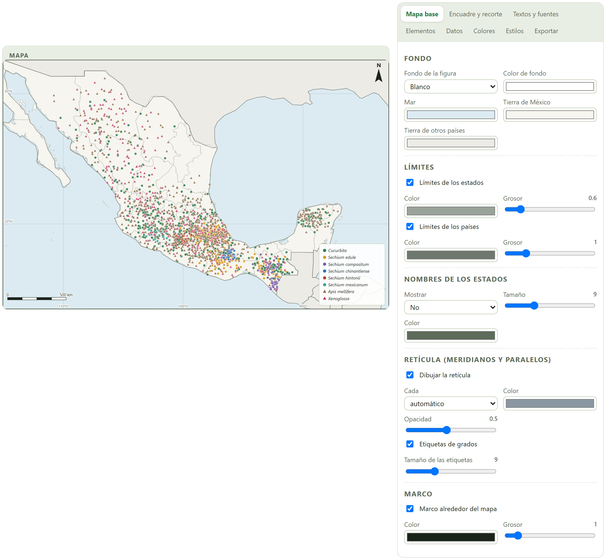
Figura 4.1. El estudio con sus valores de inicio: extensión ajustada a los registros, plantas como círculos y visitantes como triángulos, un color por unidad, flecha, escala en bloques alternos, retícula con grados y leyenda clara. A la derecha, la pestaña Mapa base.
El mapa de la izquierda se redibuja con cada cambio de la derecha. Las ocho pestañas agrupan los controles; todo lo que se elige se recuerda en ese navegador, de modo que el mapa se encuentra igual la próxima vez, y un estilo completo se puede guardar en un archivo (sección 4.6).
Pestaña
Qué se edita
Mapa base
Fondo de la figura, mar, tierra de México y de otros países; límites de estados y países; nombres de los estados; retícula; marco.
Encuadre y recorte
La extensión del mapa, el margen, la leyenda fuera del mapa y el recorte a México o a estados elegidos.
Textos y fuentes
Título, subtítulo, fuente o crédito, título de la leyenda, la familia tipográfica y los tamaños y estilos.
Elementos
Flecha del norte (ocho diseños), escala gráfica (ocho formatos) y leyenda.
Datos
Qué se dibuja (puntos, calor, rejillas, envolventes), los símbolos y cada unidad.
Colores
La paleta de las unidades, la rampa de densidad y el color de cada unidad.
Estilos
Seis estilos listos, guardar y cargar un estilo, restablecer todo.
Exportar
Formato, tamaño de papel y resolución, y la descarga.
4.3Mapa base, encuadre y recorte
Mapa base. El fondo de la figura puede ser blanco, el del tema de la app, un color propio o transparente. Se eligen los colores del mar, de la tierra de México y de la tierra de otros países (distinguirlos ayuda a leer un mapa de México); si se dibujan los límites de los estados y de los países, con su color y grosor; si se escriben los nombres de los estados —no, abreviatura o nombre completo—, con su tamaño y color; la retícula de meridianos y paralelos, cada cuántos grados (automático, 1°, 2°, 5°, 10° o 20°), su color, su opacidad y sus etiquetas de grados; y el marco alrededor del mapa.
Encuadre. La extensión puede ajustarse a los registros (con un margen en porcentaje), cubrir México completo, los estados elegidos, el mundo o unas coordenadas propias (norte, sur, oeste y este). Leyenda fuera del mapa, a la derecha saca la leyenda del área del mapa para que no tape puntos.
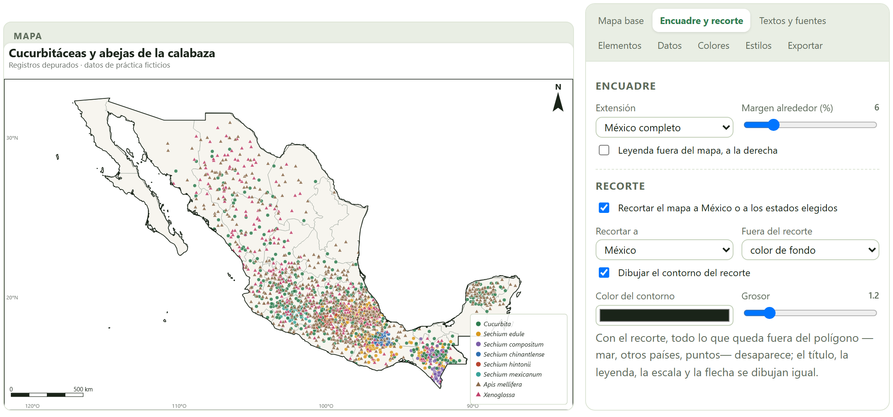
Figura 4.2. México completo, recortado a su silueta, con título y subtítulo. Fuera del recorte desaparecen el mar, los otros países y los puntos que caían fuera; la flecha, la escala, la retícula y la leyenda se dibujan igual.
Recorte.Recortar el mapa a México o a los estados elegidos dibuja solo lo que cae dentro de esa silueta. Fuera del recorte queda el color de fondo o nada (transparente, útil para poner el mapa sobre otra figura). Dibujar el contorno del recorte traza la silueta exterior —no las fronteras internas— con el color y el grosor que se elijan. Al elegir estados elegidos en la extensión o en el recorte aparece la lista de los 32 estados para marcarlos.
4.4Textos, flecha, escala y leyenda
Textos y fuentes. Cuatro textos —título, subtítulo, fuente o crédito, título de la leyenda— y seis familias tipográficas genéricas (sans del sistema, sans humanista, serif, serif clásica, sans estrecha y monoespaciada), que existen en cualquier computadora y por eso se ven igual en la del revisor. Se eligen el color del texto, el tamaño del título (con negritas, cursivas y alineación), del subtítulo y del crédito, y la esquina del crédito. Los nombres de las unidades se escriben en cursiva en la leyenda, como corresponde a los nombres científicos.
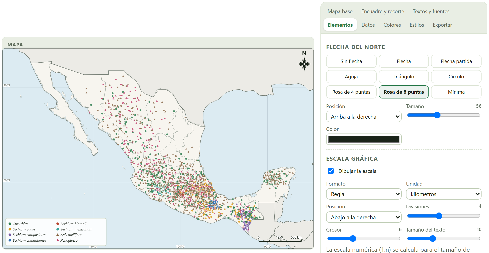
Figura 4.3. La pestaña Elementos con una rosa de ocho puntas, la escala en forma de regla y la leyenda en dos columnas. Cada elemento se coloca en cualquiera de las cuatro esquinas.
Elemento
Opciones
Flecha del norte
Sin flecha, flecha, flecha partida, aguja, triángulo, círculo, rosa de 4 puntas, rosa de 8 puntas y mínima; posición, tamaño y color.
Escala gráfica
Bloques alternos, escalonada (dos filas), barra sólida, línea con topes, regla, kilómetros y millas, solo texto y escala numérica (1:n); unidad (kilómetros o millas), posición, divisiones, grosor y tamaño del texto. La escala numérica se calcula para el tamaño de papel elegido en Exportar y cambia si cambia el papel.
Leyenda
Dibujarla o no, posición, recuadro (claro, oscuro, solo contorno o sin recuadro), tamaño del texto y de una a tres columnas.
4.5Datos y colores
La pestaña Datos decide qué se dibuja. Cada representación responde una pregunta distinta:
Representación
Para qué sirve
Puntos
La figura estándar de distribución: un símbolo por registro, con color y forma por unidad o por papel.
Mapa de calor (densidad)
Dónde se concentran los registros, con radio e intensidad ajustables. Muestra el esfuerzo de muestreo tanto como la abundancia.
Rejilla: registros por celda
Cuántos registros hay en cada celda (0.1° a 2°), con la rampa de densidad.
Rejilla: dónde coinciden planta y visitante
Las celdas con planta y visitante, solo plantas o solo visitantes: la versión visual de la prueba del Bloque 5.
Envolventes convexas con puntos
El área mínima que encierra los puntos de cada unidad y su solapamiento.
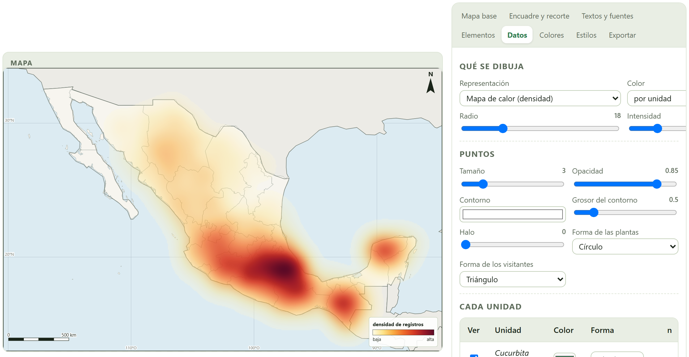
Figura 4.4. Mapa de calor con la rampa «Calor».
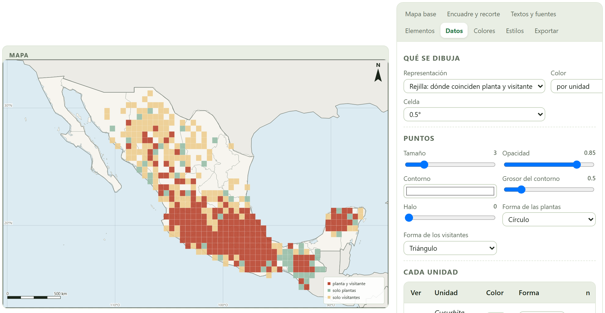
Figura 4.5. Dónde coinciden planta y visitante, en celdas de 0.5°.
En la Figura 4.5 las celdas compartidas (en rojo óxido) se concentran en el centro y el sur de México, donde se muestreó más; las de solo visitantes (ámbar claro) dominan el norte, donde Xenoglossa y la abeja melífera se registran sin cucurbitáceas silvestres. Es una lectura visual; el Bloque 5 dice si esa coincidencia es más o menos de la que el azar predice.
Los símbolos. Tamaño, opacidad, color y grosor del contorno, halo (un borde claro que separa los puntos del fondo) y la forma de las plantas y de los visitantes: círculo, cuadrado, triángulo, rombo, cruz o estrella. Con Color por papel, todas las plantas van en un color y todos los visitantes en otro.
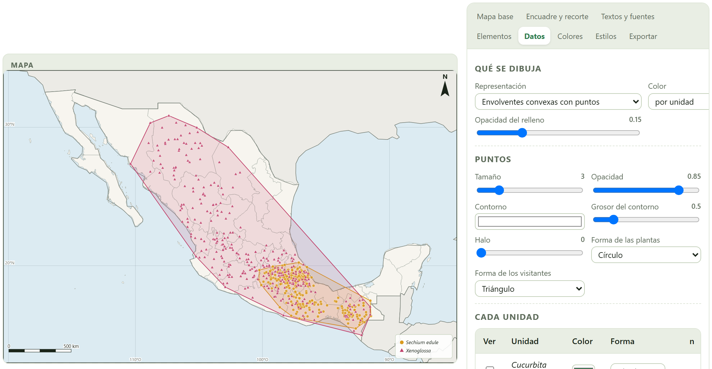
Figura 4.6. Envolventes convexas con solo dos unidades visibles: el chayote y Xenoglossa. La tabla Cada unidad permite ocultar unidades, cambiar su color y su forma, y dice cuántos registros tiene cada una.
Cada unidad. La tabla de la pestaña Datos —repetida en Colores— tiene una fila por unidad con la casilla Ver, su color, su forma y su número de registros. Los botones Mostrar todas, Solo plantas y Solo visitantes cambian la visibilidad de un golpe. Las tablas por territorio de la sección 4.7 y la descarga de puntos siguen lo que se ve.
Colores. Seis paletas para las unidades —PollinationPro, Okabe–Ito (segura al daltonismo), Tierra, Vivos, Suaves y Grises— y seis rampas para la densidad —Verdes, Ámbar, Violetas, Calor, Fríos y Grises—. Un color cambiado a mano en una unidad se conserva al cambiar de paleta; Volver a los colores de la paleta lo deshace.
4.6Estilos listos y exportación
Un estilo aplica de una vez el fondo, los colores, la tipografía y los elementos; los textos (título, crédito) y los colores propios de cada unidad se conservan.
Estilo
Cómo es
Para qué
Publicación
Blanco, marco fino, retícula y leyenda clara.
La figura de un artículo.
Blanco y negro
Grises y formas distintas por unidad.
Revistas que cobran el color.
Presentación oscura
Fondo oscuro, puntos grandes con halo.
Diapositivas.
Guía de campo
Tonos tierra, serif, rosa de los vientos, abreviaturas de los estados.
Libros, carteles de divulgación.
Cartel
Textos y puntos grandes, título en recuadro.
Carteles de congreso.
Solo datos
Sin mar ni retícula, límites tenues.
Figuras compuestas, recuadros.
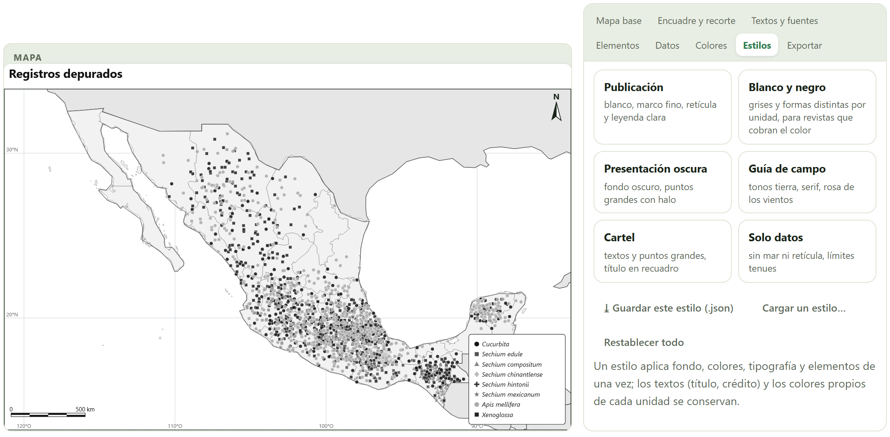
Figura 4.7. El estilo Blanco y negro.
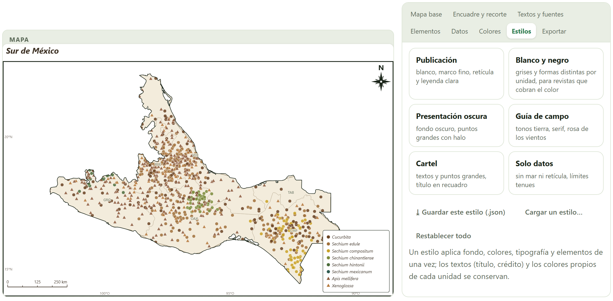
Figura 4.8.Guía de campo, recortado a seis estados del sur.
⤓ Guardar este estilo (.json) guarda todas las opciones del mapa —menos los datos— en un archivo; Cargar un estilo… lo aplica a otro estudio o en otra computadora. Así todas las figuras de mapa de una tesis salen iguales. Restablecer todo vuelve a los valores de inicio.
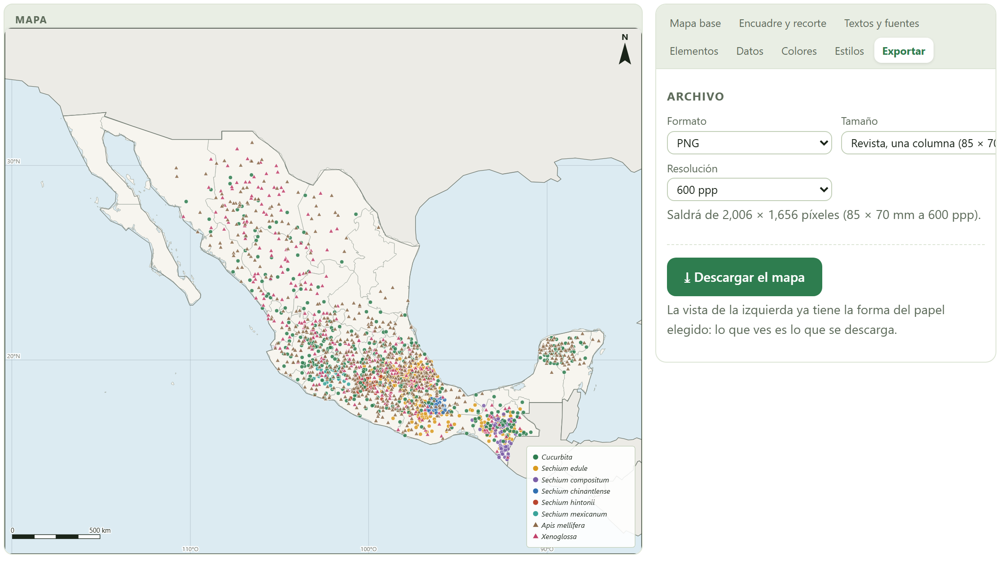
Figura 4.9. La exportación a una columna de revista (85 × 70 mm) a 600 ppp: «Saldrá de 2,006 × 1,656 píxeles». La vista de la izquierda tomó la forma del papel: lo que se ve es lo que se descarga.
Pantalla (960 × 620 px), A4 horizontal y vertical, carta horizontal, revista a una columna (85 × 70 mm), a columna y media (120 × 90 mm) y a doble columna (175 × 120 mm), diapositiva 16:9 y personalizado (en milímetros).
Resolución
150, 300, 600 o 900 ppp. Debajo se lee el tamaño en píxeles que saldrá.
iEl GeoTIFF se abre en su lugar
El GeoTIFF lleva las claves de georreferencia de una rejilla en longitud y latitud sobre WGS 84 (EPSG 4326): en un sistema de información geográfica cae exactamente sobre sus capas. Para que el amarre sea exacto en toda la imagen, quita el título y deja la leyenda dentro del mapa; la app lo recuerda al descargar.
✓Regla de decisión · qué formato entregar
Si la revista pide la figura final
entonces TIFF o PNG a 600 ppp al ancho de columna que pida (una, una y media o dos).
Si vas a retocar la figura en otro programa
entonces SVG: cada texto y cada punto sigue siendo editable.
Si la figura va a un sistema de información geográfica o a otro mapa
entonces GeoTIFF, sin título.
4.7Registros por territorio
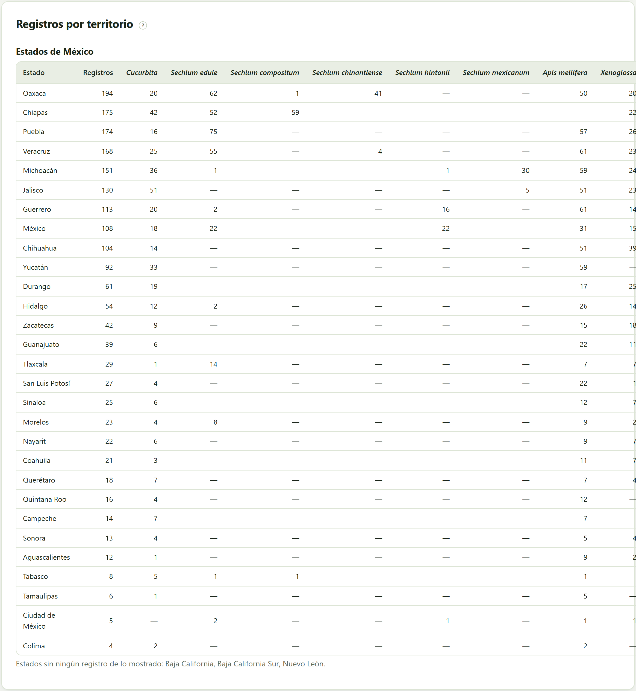
Figura 4.10. Los registros de lo que se ve en el mapa, por estado de México y por país. Oaxaca (194), Chiapas (175), Puebla (174) y Veracruz (168) concentran más registros; Baja California, Baja California Sur y Nuevo León no tienen ninguno.
Las tablas siguen lo que el mapa muestra: si se ocultan unidades, se recalculan. La de los estados da el total y una columna por unidad (hasta diez); la frase de debajo nombra los estados sin ningún registro de lo mostrado. Es la primera respuesta a «¿dónde falta muestrear?»: un estado sin registros de una planta que debería estar ahí es un hueco de muestreo o un límite real de distribución, y conviene saber cuál antes de interpretar los bloques siguientes. ⤓ Puntos mostrados (.csv), bajo el estudio, descarga los puntos visibles con su unidad y sus coordenadas.
!Lo que el mapa no dice
Un mapa de registros de presencia no es un mapa de distribución: muestra dónde alguien registró la especie, no dónde vive. Los huecos pueden ser ausencias o falta de muestreo, y las concentraciones pueden ser abundancia o esfuerzo. El pie de la figura del artículo debe decirlo («registros depurados de…, GBIF y observaciones propias») y el Bloque 8 es el que estima la distribución potencial.
5
Bloque 5 · Coocurrencia
Coocurrencia espacial
¿Coinciden la planta y el visitante en el territorio más de lo que el azar predice, una vez descontado dónde se muestreó? Tres lecturas independientes: las celdas que comparten, con la prueba exacta de Veech y su sensibilidad a la escala; la distancia de cada planta al visitante más cercano, contra un modelo nulo que conserva la geografía del muestreo; y el solapamiento de sus áreas.
5.1¿Más de lo que el azar predice?
5.2Todos los pares
5.3El par elegido y la escala
5.4La distancia al visitante más cercano
5.5El solapamiento de áreas
5.6Cómo leer las tres pruebas juntas
5.7Los avisos de este bloque
5.1¿Más de lo que el azar predice?
Que la planta y el visitante tengan registros en los mismos lugares no dice nada si no se sabe cuántas coincidencias se esperarían por azar. La prueba de este bloque compara lo observado con lo esperado, y la respuesta depende de dos decisiones: entre qué sitios se reparte el azar (el universo) y a qué escala se mira (el tamaño de la celda).
θTeoría en breve · la prueba exacta de Veech
El territorio se corta en celdas. Si el universo tiene N celdas, la planta ocupa N₁ y el visitante N₂, y se colocaran al azar una respecto de la otra, el número de celdas compartidas j seguiría la distribución hipergeométrica. La app calcula la probabilidad de observar tantas o más (asociación positiva) y tantas o menos (asociación negativa), sin simulaciones ni supuestos de normalidad (Veech 2013). El tamaño estandarizado del efecto (EEF) dice a cuántas desviaciones estándar está lo observado de lo esperado; |EEF| > 1.96 corresponde más o menos a p < 0.05 (Gotelli 2000).
El universo por omisión es el grupo objetivo: las celdas donde se registró cualquier unidad del estudio, que son las que de verdad se muestrearon (Phillips et al. 2009). La alternativa, toda la tierra de la extensión, reparte el azar también entre celdas que nadie visitó; el laboratorio del Bloque 1 (sección 1.3) muestra el error que eso produce.
5.2Todos los pares
La primera tarjeta prueba cada planta contra cada visitante con tres controles: el tamaño de la celda (0.1°, 0.25°, 0.5°, 1° o 2°, es decir, unos 11, 28, 55, 110 o 220 km), el universo y el ajuste por comparaciones múltiples de Benjamini–Hochberg.
Figura 5.1. Los doce pares del estudio de práctica en celdas de 0.25° con el grupo objetivo: 918 celdas de universo, ningún par más de lo esperado, cuatro menos de lo esperado y ocho al azar. En la matriz, cada casilla lleva el EEF; el verde es agregación, el violeta segregación, la intensidad es |EEF| y el borde punteado marca los significativos. El par con borde grueso es el elegido.
Recuadro
Qué dice
Universo
Cuántas celdas entran en el azar, con el tamaño y el tipo de universo.
Pares probados
Plantas × visitantes.
Más de lo esperado · Menos · Al azar
Los veredictos, con p ajustada si el ajuste está activo.
Sin clasificar
Los pares en los que el azar nunca podría rechazarse: los que esperan menos de una celda compartida o en los que ni el resultado más extremo alcanzaría α = 0.05. Con tan pocos datos, ninguna conclusión es posible y la app no la finge.
Al hacer clic en una casilla de la matriz se elige ese par para las tarjetas siguientes. El desplegable Tabla de todos los pares los ordena por EEF, de la agregación a la segregación:
Figura 5.2. La tabla de pares. El chayote con Xenoglossa encabeza la lista con 51 celdas compartidas contra 46.0 esperadas (EEF 0.97, al azar); Cucurbita con la abeja melífera la cierra con 118 contra 173.3 (EEF −7.72, menos de lo esperado).
Además de la prueba, cada par lleva dos índices descriptivos: el de Jaccard (celdas compartidas entre celdas de cualquiera de los dos) y la cobertura (qué fracción de las celdas de la planta tiene al visitante). ⤓ Pares (.csv) descarga la tabla completa, con los índices de Sørensen y de Simpson y las dos colas de p.
θTeoría en breve · por qué ajustar
Con 6 plantas y 2 visitantes se prueban 12 pares; con 30 pares, a α = 0.05, se esperaría uno o dos «significativos» aunque no hubiera ninguna asociación. El ajuste de Benjamini y Hochberg (1995) controla la proporción esperada de falsos positivos entre los pares que se declaran asociados. Usa la p ajustada para decidir y reporta las dos; si solo te interesa un par elegido de antemano por la hipótesis, su p sin ajustar es la que corresponde.
5.3El par elegido y la escala
Figura 5.3. El chayote y Xenoglossa. A la izquierda, la distribución hipergeométrica de celdas compartidas bajo el azar, con lo observado (51) y lo esperado (46.0); las barras en color son la cola que va de lo observado hacia afuera. A la derecha, el EEF con cinco tamaños de celda, la franja de ±1.96 y el veredicto de cada uno (+, − o ·).
Recuadro
Qué dice
Chayote × Xenoglossa
Celdas compartidas
Las observadas, de las de la planta y las del visitante.
51 de 158 y 267
Esperadas por azar
N₁·N₂/N, con el tamaño del universo.
46.0 · N = 918
EEF
El tamaño estandarizado del efecto, con su etiqueta de escala.
0.97 · azar
p (más) · p (menos)
La probabilidad de tantas o más celdas compartidas (prueba de asociación positiva) y de tantas o menos (negativa).
0.19 · 0.857
Cobertura
Qué fracción de las celdas de la planta tiene al visitante.
32 %
La figura de sensibilidad repite la prueba con los cinco tamaños de celda. En el estudio de práctica, el veredicto cambia: menos de lo esperado a 0.1°, al azar a 0.25°, más de lo esperado a 0.5°, al azar a 1° y 2°. La app lo escribe debajo y aconseja: «Repórtalo así: la asociación depende de la resolución a la que se mire.» Cuando los cinco coinciden, dice que el resultado es robusto a la escala.
✓Regla de decisión · qué tamaño de celda
Si la pregunta es si el visitante puede llegar a la flor
entonces usa celdas pequeñas (0.1–0.25°): una abeja solitaria forrajea a cientos de metros o pocos kilómetros de su nido; un abejorro, a varios kilómetros.
Si la pregunta es si comparten región (biogeografía, historia)
entonces celdas de 0.5–1°.
Si el veredicto cambia con la celda
entonces no elijas la que te conviene: reporta la figura de sensibilidad y di a qué escala hay asociación y a cuál no.
Con celdas muy finas y pocos registros casi nada coincide y los pares quedan sin clasificar; con celdas enormes casi todo coincide. Ninguno de los extremos informa.
5.4La distancia al visitante más cercano
La tercera tarjeta no usa rejilla. Para cada punto de la planta mide la distancia al registro más cercano del visitante y toma la mediana. El modelo nulo reemplaza los registros del visitante por otros tantos sitios sorteados sin reemplazo entre todos los registros del estudio —el grupo objetivo—, lo que conserva la geografía del muestreo y rompe solo el vínculo entre los dos taxones; se repite 99 a 999 veces (Davison y Hinkley 1997). Antes, los puntos se adelgazan a uno por kilómetro para que un sitio muy registrado no pese por cien.
Figura 5.4. Chayote y Xenoglossa: la mediana observada, 17.9 km, queda fuera de las 199 medianas del modelo nulo (mediana nula 13.9 km). p (más lejos) = 0.005: el visitante está más lejos de la planta de lo que el muestreo explicaría.
Recuadro
Qué dice
Mediana observada
La distancia típica de un punto de la planta al visitante más cercano, con cuántos puntos de la planta entran.
Mediana nula
La mediana de las medianas simuladas.
p (más cerca · más lejos)
La fracción de simulaciones con una mediana igual o menor (el visitante está más cerca de lo esperado) y igual o mayor (más lejos). Con 199 simulaciones, la p más pequeña posible es 0.005.
Con visitante a ≤ 10 km
Qué fracción de los puntos de la planta tiene un registro del visitante a 10 km o menos: una cifra fácil de comunicar.
!Dos pruebas, dos respuestas: no es una contradicción
A 0.25°, la prueba de celdas dice «al azar» para el chayote y Xenoglossa; la de distancias dice «más lejos de lo esperado». Miden cosas distintas: la primera cuenta si comparten celdas de 28 km; la segunda, qué tan cerca está cada chayote del visitante más próximo. En los datos de práctica, Xenoglossa se extiende por el centro y el norte, donde hay muchos registros de otras unidades, y el chayote se concentra en el centro y el sureste: dentro de las celdas que comparten, los puntos no están particularmente juntos. Reporta las dos y di qué mide cada una.
5.5El solapamiento de áreas
La cuarta tarjeta dibuja la envolvente convexa de cada unidad —el polígono más pequeño sin entrantes que encierra todos sus puntos (Andrew 1979)— y calcula su área sobre la esfera (Chamberlain y Duquette 2007), la de su intersección (Sutherland y Hodgman 1974) y qué fracción del área de la planta cubre la del visitante.
Figura 5.5. El área del chayote (301,078 km²) cae casi entera (99 %) dentro de la de Xenoglossa (1,444,639 km²).
Es la lectura más gruesa de las tres: una envolvente convexa incluye todo lo que queda entre los puntos extremos —en la Figura 5.5, buena parte del Golfo de México—, así que exagera el área de las especies con registros dispersos. Sirve para decir si el visitante cubre, al menos en extensión, el área de la planta; no para decir si coinciden dentro de ella.
5.6Cómo leer las tres pruebas juntas
Prueba
Pregunta
En la práctica (chayote × Xenoglossa)
Celdas (Veech)
¿Comparten más celdas que al azar?
Al azar a 0.25°; depende de la escala.
Vecino más cercano
¿Está el visitante más cerca de la planta que al azar?
Más lejos de lo esperado.
Envolventes
¿Cubre el visitante el área de la planta?
Sí, el 99 %.
▸Ejemplo · cómo redactarlo
«Xenoglossa ocupa prácticamente toda el área del chayote (99 % de su envolvente convexa), pero sus registros no coinciden con los de la planta más de lo esperado por azar dentro de las celdas muestreadas (0.25°: 51 celdas compartidas frente a 46.0 esperadas, EEF = 0.97), y el resultado depende de la escala. La distancia de cada registro de la planta al del visitante más cercano fue mayor que bajo un modelo nulo del grupo objetivo (mediana 17.9 frente a 13.9 km; p = 0.005). Xenoglossa es, por lo tanto, un polinizador potencial cuya coincidencia espacial con el chayote debe confirmarse con observaciones de visitas.»
Recuerda que estos números son de los datos de práctica: sirven para aprender la redacción, no para concluir nada del chayote.
!Coincidir no es interactuar
Aun con las tres pruebas a favor, lo que el bloque demuestra es oportunidad de interacción. La frase que un revisor tachará es «X es polinizador de Y porque sus distribuciones se solapan»; la correcta, «X y Y se solapan en el espacio, lo que hace de X un polinizador potencial a confirmar con observaciones de visitas y de carga de polen» (Blanchet et al. 2020; Dormann et al. 2018).
5.7Los avisos de este bloque
Mensaje
Qué significa y qué hacer
Hacen falta plantas y visitantes
La lista necesita al menos una planta y un visitante con registros depurados.
La rejilla es demasiado fina para el universo de «toda la tierra» en esta extensión
Con celdas de 0.1° sobre un área grande, el universo de toda la tierra tiene demasiadas celdas. Usa celdas más grandes o el grupo objetivo.
El veredicto cambia con la escala…
No es un error: es un resultado. Repórtalo con la figura de sensibilidad.
Muchos pares «sin clasificar»
Hay pocos registros para la celda elegida. Usa celdas más grandes o reúne especies en su género (Bloque 3).
6
Bloque 6 · Fenología y altitud
Fenología y altitud
¿Vuela el visitante cuando la planta florece, y a la misma altitud? Las fechas de los registros se leen como estadística circular —el año es un círculo—: fecha media, concentración, estacionalidad y diferencia entre calendarios. Los perfiles mensuales se comparan con los mismos índices de solapamiento que el nicho, con la opción de corregir por el esfuerzo de muestreo de cada mes. Y la altitud se compara con densidades a lo largo del gradiente.
6.1El año es un círculo
6.2El calendario de todas las unidades
6.3La estadística circular de cada unidad
6.4Planta y visitante
6.5La altitud
6.6Los avisos de este bloque
6.1El año es un círculo
El 31 de diciembre y el 1 de enero están a un día. Tratar las fechas como números de 1 a 365 hace que una planta que florece de noviembre a febrero tenga su «media» en junio. La estadística circular convierte cada fecha en un ángulo y resuelve el problema (Batschelet 1981; Fisher 1993; Morellato et al. 2010).
θTeoría en breve · fecha media, R̄ y las dos pruebas
El día d equivale al ángulo θ = 2π(d − ½)/365. La fecha media es la dirección del vector promedio de todos los registros y su longitud R̄, de 0 a 1, mide la concentración: 1 si todos caen el mismo día, 0 si se reparten por igual en el año. La desviación estándar circular, en días, es su versión más intuitiva. La prueba de Rayleigh dice si la distribución es estacional (p pequeña) o uniforme; la de Watson–Williams, si dos calendarios tienen la misma fecha media (Zar 2010), y exige que no estén demasiado dispersos (κ ≥ 1).
C̄ = Σcos θᵢ / n S̄ = Σsin θᵢ / n R̄ = √(C̄² + S̄²) θ̄ = atan2(S̄, C̄) Z = n·R̄²
Un registro con fecha no dice necesariamente que la planta estaba en flor: un ejemplar de herbario puede ser vegetativo o con fruto. Por eso la casilla Plantas: solo registros con flor usa solo los registros cuya condición reproductiva dice flor o antesis. Y el número de registros por mes refleja también cuándo se sale al campo: la casilla Corregir por el esfuerzo mensual del grupo objetivo divide cada perfil entre los registros de todo el estudio en ese mes (sección 6.2).
6.2El calendario de todas las unidades
Figura 6.1. El fenograma del estudio de práctica. Cada fila es una unidad y cada casilla un mes; la intensidad del color es la fracción de los registros de esa unidad en ese mes, y el triángulo marca la fecha media cuando la prueba de Rayleigh es significativa. La franja gris de arriba es el esfuerzo de todo el estudio.
Los recuadros dicen cuántos registros traen mes (los 1,856 depurados, el 100 %), cuántas plantas tienen flor registrada en su condición reproductiva (331), cuántas unidades entran (6 plantas y 2 visitantes) y si el perfil es crudo o corregido. En el fenograma se ve lo esencial de un vistazo: las cinco especies de Sechium y las calabazas florecen de julio a octubre; Xenoglossa vuela de junio a septiembre; la abeja melífera se registra todo el año.
Figura 6.2. El mismo fenograma corregido por el esfuerzo mensual. La abeja melífera, que se registraba todo el año, aparece concentrada en invierno: en esos meses el estudio tiene pocos registros, y sus registros pesan más al dividir entre el esfuerzo.
!La corrección por esfuerzo también se equivoca
Corregir divide la fracción de cada mes entre el esfuerzo de ese mes, y los meses con muy pocos registros de todo el estudio (menos de cinco) se dejan en cero para no dividir entre casi nada. Aun así, con pocos registros la corrección amplifica el ruido, como en la Figura 6.2. La corrección cambia los perfiles mensuales y los índices de solapamiento; la fecha media y R̄ se calculan siempre con las fechas de los registros. Reporta el resultado crudo y el corregido, y di cuál usas para concluir.
6.3La estadística circular de cada unidad
Figura 6.3. La estadística circular de las ocho unidades. Las plantas tienen floraciones marcadas (R̄ de 0.65 a 0.91); Xenoglossa vuela concentrada (R̄ 0.80, fecha media 11 de agosto); la abeja melífera se registra casi todo el año (R̄ 0.12, difusa).
Columna
Qué dice
Con fecha
Cuántos registros de la unidad entran, de cuántos tiene.
Fecha media
La dirección del vector medio, en día y mes.
R̄
La concentración, con su etiqueta: difusa, moderada o marcada.
DE circular (días)
La dispersión alrededor de la fecha media.
Rayleigh p
Si hay estacionalidad. Con cientos de registros casi siempre es muy pequeña: mira R̄.
¿Dos picos?
«posible» cuando la segunda armónica es fuerte (R̄₂ > 0.3 y mayor que R̄ + 0.15): dos floraciones al año, o dos poblaciones con calendarios distintos. Con dos picos, la fecha media cae entre ellos y no describe a ninguno.
✓Regla de decisión · qué tan estacional es
Si R̄ < 0.3
entonces la unidad se registra casi todo el año o tiene dos temporadas (difusa): su fecha media dice poco y no conviene compararla con Watson–Williams.
Si R̄ está entre 0.3 y 0.6
entonces hay una temporada preferida, pero amplia (moderada).
Si R̄ > 0.6
entonces hay una temporada definida (marcada) y la fecha media la resume bien.
La ficha ? de R̄ trae esta escala. Son convenciones de lectura, no leyes.
6.4Planta y visitante
La segunda tarjeta compara una planta con un visitante, elegidos en sus dos selectores.
Figura 6.4. El chayote y Xenoglossa. En la rosa, el área de cada sector es proporcional a la fracción del mes y la flecha es el vector medio; en las barras, los perfiles mensuales y, en claro, su solapamiento (el mínimo de los dos en cada mes, cuya suma es la D).
Recuadro
Qué dice
Chayote × Xenoglossa
D de Schoener
La fracción de los dos calendarios que se comparte: Σ mín(pᵢ, qᵢ) sobre los doce meses, de 0 a 1 (Schoener 1968).
0.79 · alto
I de Warren · O de Pianka
Dos índices de solapamiento más benévolos con las diferencias pequeñas (Warren et al. 2008; Pianka 1973). Se reportan junto a la D.
0.94 · 0.91
Desfase de las fechas medias
Los días entre las dos fechas medias, con la p de Watson–Williams.
26 días · p ≈ 7 × 10⁻¹³
Floración con vuelo
Qué fracción del perfil de la planta cae en meses con registros del visitante.
97 %
Meses en común
Los meses en que los dos tienen al menos el 5 % de su perfil.
jun a oct
La lectura es la de la sección 1.4: el chayote de práctica florece en promedio el 5 de septiembre y Xenoglossa vuela en promedio el 11 de agosto; con cientos de registros, ese desfase de 26 días es muy significativo, y sin embargo el 97 % de la floración cae en meses con abejas volando y los dos calendarios comparten el 79 % de su perfil. El visitante se adelanta a la planta, pero la acompaña.
Figura 6.5. Todos los pares, de mayor a menor D. Los pares con la abeja melífera llevan un asterisco en la p de Watson–Williams: con fechas tan dispersas (κ < 1), la prueba es poco fiable.
✓Regla de decisión · la D de Schoener
Si D < 0.2
entonces solapamiento nulo o muy limitado: floración y vuelo casi no coinciden.
Si D está entre 0.2 y 0.4
entonces bajo.
Si D está entre 0.4 y 0.6
entonces moderado.
Si D está entre 0.6 y 0.8
entonces alto.
Si D > 0.8
entonces muy alto: los calendarios son casi el mismo.
La escala es la de Rödder y Engler (2011) para el nicho, aplicada al calendario. Un generalista de todo el año (la abeja melífera) tiene D moderada con casi todas las plantas porque su perfil se reparte: lee siempre la D junto con la floración con vuelo.
⤓ Unidades (.csv) y ⤓ Pares (.csv) descargan las dos tablas, con los perfiles mensuales de cada unidad.
6.5La altitud
La tercera tarjeta compara la distribución altitudinal del par con densidades de kernel (Silverman 1986) y calcula su D. Necesita registros con altitud, que GBIF trae solo a veces: en el estudio de práctica, solo el 23 % de los registros la traen, y ninguno de los visitantes. El Bloque 7 puede completarla desde una capa de altitud (sección 7.2); la Figura 6.6 se hizo después de hacerlo con la capa de altitud de práctica.
Figura 6.6. La altitud del chayote y de Xenoglossa con la altitud completada desde la capa de práctica: D = 0.78 (alto), y el 96 % de los registros de la planta cae dentro del 90 % central del intervalo del visitante. La tabla da mínimo, cuartiles, mediana y máximo de cada unidad.
La frase de debajo de la figura da la D altitudinal y qué fracción de los registros de la planta cae dentro del 90 % central del intervalo del visitante. La tabla ayuda a leer los parientes silvestres: en los datos de práctica, S. chinantlense es de tierras bajas (mediana 317 m) y S. mexicanum de tierras altas (1,687 m).
iLa altitud de una capa no es la del registro
La altitud leída de un modelo digital de elevación es la de la celda (a 0.1°, un promedio de unos 11 km), no la del punto exacto: en montaña puede diferir cientos de metros. Los registros que traían su propia altitud la conservan; la capa solo completa los que no la tienen.
6.6Los avisos de este bloque
Mensaje
Qué significa y qué hacer
Solo N % de los registros traen altitud: el perfil puede no representar a toda la unidad
Complétala desde una capa en el Bloque 7, o lee la altitud con cautela.
Ningún registro trae altitud…
Carga un modelo digital de elevación en el Bloque 7 y completa la altitud desde ahí.
El par elegido no tiene altitudes
Una de las dos unidades no tiene ningún registro con altitud.
* κ < 1 en la tabla de pares
Las fechas de una de las unidades son tan dispersas que Watson–Williams es poco fiable. Usa la D y la floración con vuelo.
«posible» en ¿Dos picos?
La unidad puede tener dos temporadas. Revisa el fenograma y considera separar poblaciones o subespecies (Bloque 3).
Pocos registros con flor
Con Plantas: solo registros con flor activada, una planta con pocos registros con flor puede quedar con un perfil ruidoso. Úsala para confirmar, no como único análisis.
7
Bloque 7 · Nicho ambiental
Nicho ambiental
¿Viven la planta y el visitante en los mismos climas? Se comparan en el espacio ambiental —los dos primeros componentes principales de tus capas—, corrigiendo por lo que el ambiente de la región ofrece, con dos pruebas por aleatorización: si los nichos son idénticos y si se parecen más de lo que el solo parecido de los ambientes produciría. Después, variable por variable, qué separa a los dos.
7.1Comparar climas, no lugares
7.2Las capas ambientales
7.3El fondo y los parámetros
7.4El espacio ambiental
7.5Equivalencia y similitud
7.6Variable por variable
7.7Los avisos de este bloque
7.1Comparar climas, no lugares
Dos especies pueden vivir en lugares distintos y compartir clima, o vivir cerca y usar ambientes distintos. Para un estudio de polinización, lo segundo importa: si el visitante tolera un intervalo de temperatura más estrecho que la planta, habrá partes del área de la planta donde el visitante no puede vivir, aunque hoy compartan región. Y el cambio climático mueve a cada especie según su propio nicho.
θTeoría en breve · el método de Broennimann et al. (2012)
1) Las celdas del fondo —el ambiente disponible— se resumen con un análisis de componentes principales de las variables estandarizadas. 2) Los registros de cada unidad se proyectan en los dos primeros ejes. 3) En una rejilla de 100 × 100 de ese plano se estima la densidad de los registros y la del fondo con un kernel gaussiano; la de los registros se conserva solo donde hay ambiente disponible y, si se pide, se divide entre la del fondo. 4) La D de Schoener y la I de Warren comparan las densidades de las dos unidades, de 0 (nichos sin nada en común) a 1 (idénticos). 5) La prueba de equivalencia reparte al azar los registros entre las dos unidades; la de similitud mueve el nicho del visitante a un lugar al azar del fondo; las dos se repiten muchas veces (Warren et al. 2008).
7.2Las capas ambientales
El bloque trabaja con tus capas: GeoTIFF (.tif) o rejillas ASCII (.asc), en grados, de preferencia todas con la misma resolución. Se eligen con Elegir archivos… o, más cómodo, Elegir una carpeta…. Cada capa se lee solo en la ventana que cubre los registros más un margen (3° por omisión): una capa mundial a 30″ tiene 933 millones de celdas y el estudio necesita unos pocos millones, así que el lector descomprime solo esa ventana. Si una capa tiene otra rejilla que la primera, se remuestrea a la de la primera y la tabla lo dice.
La app no trae capas climáticas reales: las bases climáticas globales no permiten redistribuir sus archivos, y se descargan una vez desde su sitio (las 19 variables bioclimáticas, a 10′, 5′, 2.5′ o 30″). Para aprender, el desplegable ¿Sin capas o solo para practicar? Capas ficticias generadas por el programa carga, con Cargar las capas de práctica, cuatro capas inventadas para México y Centroamérica (sección I.7).
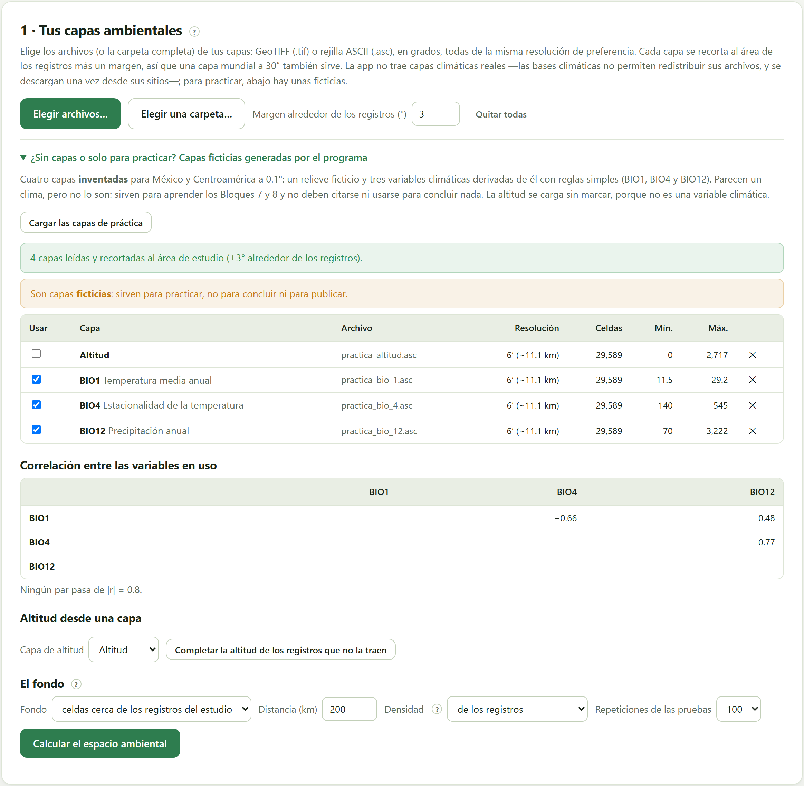
Figura 7.1. Las capas de práctica recortadas al área del estudio: 29,589 celdas de 6′ (unos 11 km). La altitud se carga sin marcar porque no es una variable climática; BIO1 (temperatura media anual), BIO4 (estacionalidad de la temperatura) y BIO12 (precipitación anual) entran al análisis. El aviso ámbar recuerda que son ficticias.
Parte de la tarjeta
Qué hace
La tabla de capas
La casilla Usar decide qué variables entran; el nombre se reconoce por el final del archivo (…bio_1 → BIO1, con su nombre largo) y elev, alt o dem → Altitud. La ✕ quita una capa; Quitar todas, todas.
Correlación entre las variables en uso
La r de Pearson entre cada par de variables sobre las celdas del área (una muestra de hasta 20,000). Las que pasan de |r| = 0.8 salen en rojo. En la práctica, ninguna: la mayor es −0.77 (BIO4 con BIO12).
Altitud desde una capa
Con una capa de altitud elegida, Completar la altitud de los registros que no la traen la lee en el punto de cada registro sin altitud. Los que traían la suya la conservan. El Bloque 6 la usa enseguida (Figura 6.6).
✓Regla de decisión · qué variables usar
Si dos variables tienen |r| > 0.8
entonces deja una: el análisis de componentes absorbe la correlación, pero dos variables casi idénticas dan doble peso a lo que miden.
Si no sabes cuáles elegir
entonces elige pocas y con sentido para la biología del par: temperatura media, estacionalidad, precipitación anual y de la temporada seca suelen bastar para plantas y abejas.
Si tus registros son de GBIF de precisión desconocida
entonces 2.5′ o 5′ es una resolución razonable; 30″ solo tiene sentido con coordenadas de GPS.
7.3El fondo y los parámetros
Control
Qué hace
Fondo
Celdas cerca de los registros del estudio (a la distancia elegida, 200 km por omisión) o toda el área de las capas. El fondo es el ambiente que estaba al alcance de las especies: sobre él se calculan los componentes principales y la densidad del ambiente disponible.
Densidad
De los registros (por omisión) o corregida por el ambiente: dividir entre la densidad del fondo corrige que un clima muy común acumule registros solo por ser común, pero amplifica los bordes del espacio disponible, donde hay pocas celdas y un solo registro pesa mucho.
Repeticiones de las pruebas
50, 100, 200 o 500. Con 100, la p más pequeña posible es 1/101 ≈ 0.01; para publicar, 500.
Calcular el espacio ambiental
Arma el fondo, el análisis de componentes, las densidades y las pruebas de todos los pares.
!El fondo cambia la D
Un fondo demasiado amplio incluye ambientes que nunca estuvieron al alcance de las especies y hace parecer los nichos más parecidos de lo que son. Declara el fondo en los métodos y, si puedes, reporta el resultado con dos fondos (por ejemplo, 200 km y toda el área). Lo mismo con la densidad: si las dos versiones dan D parecidas y las mismas conclusiones, el resultado es robusto.
7.4El espacio ambiental
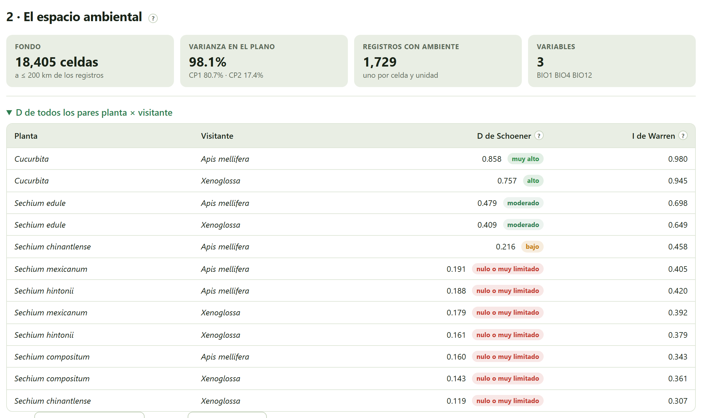
Figura 7.2. El espacio del estudio de práctica: 18,405 celdas de fondo a 200 km o menos de los registros; los dos primeros componentes explican 98.1 % de la varianza (80.7 y 17.4 %); 1,729 registros con ambiente, uno por celda y unidad. La tabla ordena los doce pares por D.
Los registros con ambiente son uno por celda y unidad: diez registros de la misma especie en la misma celda de 11 km dicen lo mismo del clima y no deben pesar diez veces. La tabla D de todos los pares planta × visitante da la primera lectura: Cucurbita comparte mucho nicho con los dos visitantes (D = 0.86 y 0.76); los parientes silvestres de áreas pequeñas, casi nada.
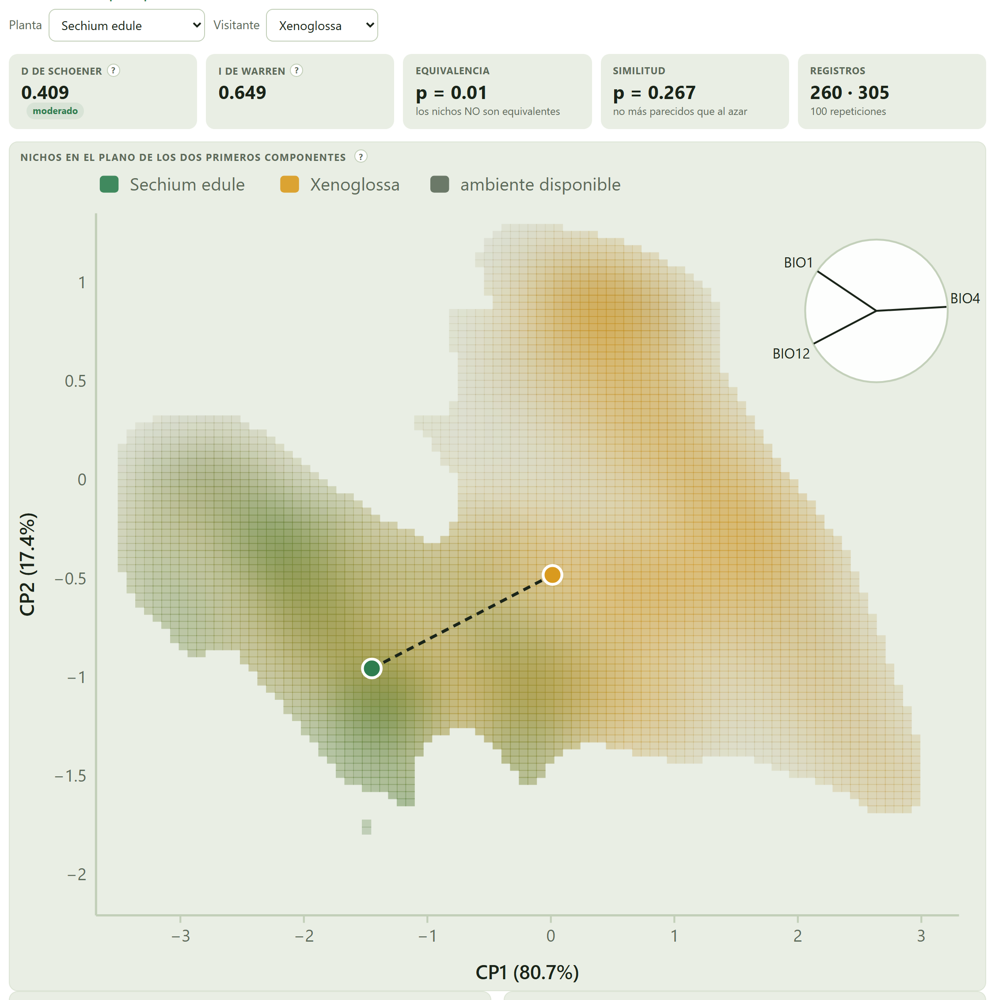
Figura 7.3. El chayote y Xenoglossa en el plano de los dos componentes. El color verde es la densidad del chayote; el ámbar, la de Xenoglossa; donde se mezclan, comparten ambiente. Los dos círculos son los centroides de cada nicho y la línea mide cuánto se separan. El círculo de la esquina dice hacia dónde crece cada variable en el plano.
En la Figura 7.3, BIO4 (estacionalidad) apunta a la derecha y BIO12 (lluvia) abajo a la izquierda: el primer componente va de los climas lluviosos y poco estacionales a los secos y estacionales. El chayote de práctica ocupa la parte lluviosa y Xenoglossa se extiende hacia la seca: D = 0.409, moderado.
7.5Equivalencia y similitud
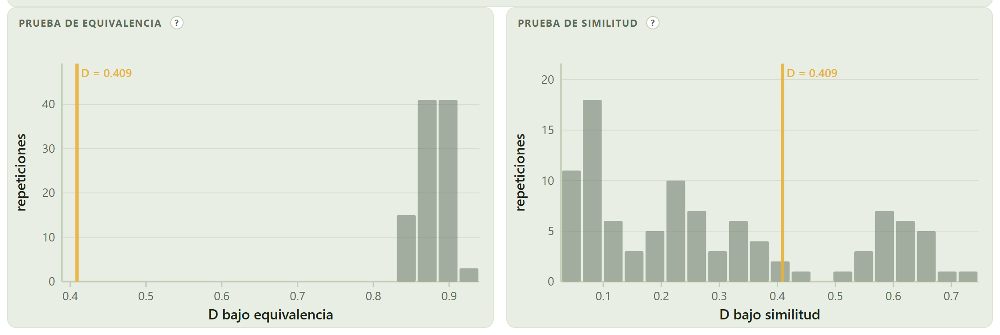
Figura 7.4. Las dos pruebas del chayote y Xenoglossa con 100 repeticiones. A la izquierda, las D que se obtienen repartiendo los registros al azar entre las dos unidades: todas por encima de 0.8, lejos de la observada (0.409). A la derecha, las D que se obtienen moviendo el nicho del visitante a lugares al azar del fondo: la observada cae en medio.
Prueba
Pregunta
Chayote × Xenoglossa
Equivalencia
¿Son los dos nichos idénticos? Si la D observada es menor que casi todas las de los repartos al azar (p < 0.05), no son equivalentes.
p = 0.01 · los nichos NO son equivalentes
Similitud
¿Se parecen más de lo que produciría el solo parecido de los ambientes disponibles? Si la D observada es mayor que casi todas las de los nichos movidos al azar (p < 0.05), son más parecidos que al azar: hay conservadurismo de nicho.
p = 0.267 · no más parecidos que al azar
▸Ejemplo · cómo redactarlo
«En el espacio de los dos primeros componentes principales del ambiente (98.1 % de la varianza), el nicho de Sechium edule se solapó moderadamente con el de Xenoglossa (D = 0.41; I = 0.65). La prueba de equivalencia rechazó que los nichos fueran idénticos (p = 0.01) y la de similitud no indicó que fueran más parecidos que lo esperado por los ambientes disponibles (p = 0.27; 100 repeticiones cada una; Warren et al. 2008; Broennimann et al. 2012).»
De nuevo: son los números de las capas de práctica, útiles para aprender la redacción.
✓Regla de decisión · las dos pruebas juntas
Si equivalencia p < 0.05 y similitud p < 0.05
entonces los nichos no son idénticos, pero se parecen más de lo que los ambientes explican: comparten preferencias.
Si equivalencia p < 0.05 y similitud p ≥ 0.05
entonces los nichos difieren y su parecido no va más allá del de los ambientes: cada uno usa el clima a su manera (el caso del ejemplo).
Si equivalencia p ≥ 0.05
entonces no se puede rechazar que los nichos sean idénticos. Con pocos registros la prueba tiene poca potencia: di cuántos había.
7.6Variable por variable
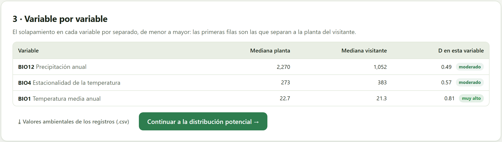
Figura 7.5. La D en cada variable por separado, de menor a mayor. La precipitación anual es la que más separa al chayote de Xenoglossa en las capas de práctica (medianas de 2,270 y 1,052 mm; D = 0.49); la temperatura media, la que menos (22.7 y 21.3 °C; D = 0.81).
Las primeras filas son las que separan a la planta del visitante: la variable en la que vale la pena pensar al buscar dónde podría romperse la relación. ⤓ Valores ambientales de los registros (.csv) descarga, para cada registro con ambiente, su unidad, sus coordenadas, su posición en los dos componentes y el valor de cada variable.
7.7Los avisos de este bloque
Mensaje
Qué significa y qué hacer
No hay archivos .tif, .tiff o .asc en lo elegido
La carpeta o los archivos no son capas. Revisa la extensión.
Un error al leer una capa (formato, compresión)
El lector acepta GeoTIFF con o sin compresión LZW, Deflate o PackBits, clásico o BigTIFF, en bandas o mosaicos, y rejillas ASCII. Una capa en metros (proyectada) no sirve: reproyéctala a grados.
the layer does not cover the study area
La capa no se superpone con los registros. Revisa que esté en grados y que cubra el área.
N pares con |r| > 0.8 (en rojo)…
Dos variables casi idénticas. Deja una de cada par (regla de la sección 7.2).
Hacen falta al menos dos capas en uso y un fondo con celdas válidas
Marca al menos dos variables, o amplía la distancia del fondo.
Son capas ficticias: sirven para practicar, no para concluir ni para publicar
Se cargaron las capas de práctica. El informe del Bloque 10 lo repite en su sección del nicho.
8
Bloque 8 · Distribución potencial
Distribución potencial y desajuste
Dónde es idóneo el ambiente para la planta y para cada visitante, y dónde la planta queda sin ningún visitante potencial. Tres modelos de idoneidad —envolvente, Mahalanobis y logística con fondo— evaluados por validación cruzada; el mapa de la planta con y sin visitante; y, con capas de clima futuro, cómo cambia ese desajuste.
8.1Dónde podría quedarse sola la planta
8.2Los modelos
8.3Evaluación y mapas de idoneidad
8.4El desajuste
8.5Con clima futuro
8.6Los avisos de este bloque
8.1Dónde podría quedarse sola la planta
El Bloque 7 comparó los nichos en el espacio ambiental; este bloque los lleva de regreso al mapa. Con un modelo de idoneidad para la planta y otro para cada visitante potencial, cada celda cae en una de cuatro clases: idónea para los dos, solo para la planta, solo para el visitante o para ninguno. Las celdas solo para la planta son el desajuste: la parte del área de la planta que dependería de otros visitantes, o que quedaría sin polinización si la relación fuera exclusiva (Schweiger et al. 2008). Con el clima futuro, el desajuste puede crecer o encogerse (Kerr et al. 2015).
!Este bloque usa las capas del Bloque 7
Las variables son las marcadas en el Bloque 7 (se leen arriba de la tarjeta). Si no hay al menos dos capas cargadas, el bloque pide ir por ellas. En este capítulo son las capas de práctica —BIO1, BIO4 y BIO12—, y todo lo que se dice de sus mapas es sobre un clima inventado.
8.2Los modelos
Figura 8.1. Los controles: la planta, el modelo, la regla del umbral, el fondo y los visitantes potenciales, que por omisión son todos los visitantes de la lista.
Modelo
Cómo decide la idoneidad
Logística con fondo (por omisión)
Compara las celdas con registros contra celdas de fondo con términos lineales y cuadráticos de las variables estandarizadas y una penalización de cresta, ajustada por mínimos cuadrados reponderados. Es el más flexible (Phillips et al. 2009; Elith et al. 2011).
Distancia de Mahalanobis
Qué tan lejos está una celda del centro climático de los registros, teniendo en cuenta cómo covarían las variables; la idoneidad es la cola superior de χ² a esa distancia (Farber y Kadmon 2003).
Envolvente bioclimática
Idóneo lo que cae dentro del intervalo de los registros en todas las variables, con más peso hacia el centro; el más sencillo y el más conservador (Nix 1986).
Control
Qué hace
Umbral
El valor a partir del cual una celda se declara idónea: máximo TSS (el que mejor separa registros de fondo), 10 % de presencias (deja fuera el 10 % de registros menos idóneos) o presencia mínima (incluye todos los registros; el más amplio) (Liu et al. 2005).
Fondo
Grupo objetivo (las celdas con registros de cualquier unidad del estudio: corrige el sesgo de muestreo) o toda el área. Solo cuenta en la logística y en la evaluación.
Visitantes potenciales
Los visitantes que cuentan para el desajuste. Desmarcar uno pregunta qué pasaría sin él.
Ajustar y mapear
Ajusta el modelo de la planta y de cada visitante marcado, los evalúa y dibuja los mapas.
8.3Evaluación y mapas de idoneidad
Figura 8.2. La evaluación de los tres modelos logísticos con las capas de práctica, y los dos mapas de idoneidad: la del chayote (con sus registros) y la mayor entre los visitantes en cada celda.
Cada modelo se evalúa por validación cruzada en cuatro partes: se ajusta con tres cuartos de las celdas con registros y se prueba con el cuarto restante, cuatro veces. Así los números dicen qué tan bien predice el modelo registros que no vio.
Columna
Qué dice
Chayote · Xenoglossa · Apis
Celdas con registros
Las presencias del modelo (una por celda de la capa).
260 · 305 · 642
AUC (validación)
La probabilidad de que una celda con registro reciba más idoneidad que una del fondo al azar (Swets 1988).
0.793 · 0.609 · 0.577
TSS (validación)
Sensibilidad + especificidad − 1 con el umbral elegido; 0 es azar (Allouche et al. 2006).
0.477 · 0.090 · 0.111
Omisión
La fracción de registros de validación que caen fuera del área idónea.
13 % · 48 % · 16 %
Umbral
El valor de idoneidad del corte.
0.452 · 0.525 · 0.444
✓Regla de decisión · AUC y TSS
AUC < 0.6 · 0.6–0.7 · 0.7–0.8 · 0.8–0.9 · > 0.9
casi al azar · pobre · aceptable · buena · excelente.
TSS < 0.2 · 0.2–0.4 · 0.4–0.6 · > 0.6
pobre · regular · bueno · muy bueno.
Si un visitante tiene AUC casi al azar
entonces su mapa no discrimina: suele ser un generalista que vive en casi todos los climas del área (la abeja melífera) o una unidad con registros muy dispersos. Su idoneidad alta en todas partes borrará el desajuste; di que es por falta de discriminación, no por nicho compartido.
Con datos de solo presencia, el AUC depende del tamaño del fondo: compara modelos con el mismo fondo, no contra números de otros artículos (Lobo et al. 2008).
En la Figura 8.2, el modelo del chayote es aceptable y su mapa sigue la vertiente húmeda del sur y del Golfo de las capas de práctica; los de los visitantes casi no discriminan, y el mapa de la derecha —la mayor idoneidad entre los dos en cada celda— sale alto casi en todas partes. El mapa de la planta muestra además un fenómeno real de estos modelos: idoneidad alta en el noreste, fuera del área de los registros, donde el modelo extrapola a climas que no vio.
8.4El desajuste
Figura 8.3. El desajuste del chayote con los dos visitantes potenciales en las capas de práctica: de 716,303 km² idóneos para la planta, 40 % tienen visitante potencial y 60 % no.
Recuadro
Qué dice
En la práctica
Área idónea de la planta
La superficie de las celdas idóneas para la planta, en km² sobre la esfera.
716,303 km²
Con visitante potencial
La fracción y el área donde también es idónea para al menos un visitante.
40 % · 289,312 km²
Desajuste: planta sin visitante
La fracción y el área donde es idónea solo para la planta.
60 % · 426,991 km²
Solo el visitante
El área idónea para algún visitante pero no para la planta.
2,454,625 km²
Debajo del mapa, la app dice qué fracción de las celdas queda fuera del intervalo ambiental de los registros de la planta en al menos una variable: «35% de las celdas del mapa quedan fuera del intervalo ambiental de los registros de la planta en al menos una variable: ahí el modelo extrapola y su idoneidad debe leerse con cautela.»⤓ Clases por celda (.csv) descarga cada celda con sus coordenadas, la idoneidad de la planta y su clase actual y futura.
!Un desajuste potencial
El mapa se basa solo en idoneidad ambiental: no considera dispersión, barreras, uso del suelo, la conducta de los visitantes ni otros visitantes que no estén en la lista. Un desajuste grande dice dónde conviene buscar en campo qué visita a la planta; no dice que ahí la planta no se poliniza.
✓Regla de decisión · cómo defender el desajuste
Si el desajuste cambia mucho con el umbral
entonces muéstralo con dos reglas (máximo TSS y 10 % de presencias) y usa la misma para la planta y los visitantes.
Si los modelos de los visitantes tienen TSS pobre
entonces no concluyas sobre el desajuste: el mapa de visitantes no es confiable.
Si una parte grande del mapa se extrapola
entonces recorta la interpretación al área donde hay registros y dilo en los métodos.
8.5Con clima futuro
La cuarta tarjeta aplica los modelos ya ajustados, sin volver a ajustarlos, a las mismas variables calculadas para un periodo futuro según un modelo climático y una trayectoria de emisiones. Elegir las capas futuras… recibe los archivos, que se reconocen por el final de su nombre («bio_1», «bio_12»…) y deben ser las mismas variables en uso. Para practicar, Usar el futuro de práctica (ficticio) carga un futuro inventado, más cálido y más seco, que solo funciona con las capas de práctica.
Figura 8.4. El desajuste con el futuro de práctica. El área idónea del chayote cae 62 %, la que tiene visitante potencial 44 % y el desajuste 74 %: en este futuro inventado, la planta pierde sobre todo las zonas donde ya estaba sola.
La tabla compara, en km², el área idónea de la planta, la que tiene visitante potencial y el desajuste, hoy y en el futuro, con su cambio en porcentaje. El informe del Bloque 10 lo retoma con los nombres de los archivos futuros.
iVarios modelos climáticos, no uno
Un solo modelo climático es una de muchas proyecciones posibles. Para un artículo, repite la proyección con tres o más modelos climáticos y dos trayectorias de emisiones, y reporta el intervalo del cambio. La app proyecta un conjunto de capas a la vez: vuelve a elegir las capas futuras para cada combinación y anota el resultado.
8.6Los avisos de este bloque
Mensaje
Qué significa y qué hacer
Hacen falta capas ambientales
Carga al menos dos capas en el Bloque 7.
Primero ajusta los modelos con el clima actual
El futuro se proyecta con los modelos ya ajustados: pulsa Ajustar y mapear antes.
Faltan capas futuras para: …
Las capas futuras deben ser las mismas variables en uso y llamarse igual al final («bio_1»…).
El futuro de práctica solo acompaña a las capas de práctica del Bloque 7
Con tus capas reales, elige tus capas futuras.
N % de las celdas del mapa quedan fuera del intervalo ambiental…
Ahí el modelo extrapola. Léelo con cautela y dilo en los métodos.
Una unidad con muy pocas celdas con registros
La validación cruzada necesita registros en cada parte; con muy pocos, el modelo y su evaluación son frágiles. Reúne especies en su género o amplía el área.
9
Bloque 9 · Red de interacciones
Red de interacciones
Aquí ya no se habla de coincidencias sino de visitas registradas: tus observaciones de campo y lo que otros publicaron. La red planta–visitante dice qué tan especializada es la relación —conectancia, anidamiento, especialización y módulos, contra modelos nulos—, qué visitantes son clave para cada planta y cuántos faltan por registrar.
9.1De la coincidencia a la visita
9.2Qué interacciones entran
9.3La red y sus modelos nulos
9.4Plantas y visitantes, uno por uno
9.5Una planta y sus visitantes
9.6Los avisos de este bloque
9.1De la coincidencia a la visita
Los Bloques 5 a 8 midieron oportunidad de interacción. Este bloque trabaja con el cuarto eslabón de la cadena de evidencia (sección 1.7): la visita a la flor. Una red de visitas es una matriz de plantas (filas) por visitantes (columnas) con el número de visitas observadas en cada casilla, o con un 1 cuando solo se sabe que el vínculo existe.
Las redes de polinización tienen una estructura característica: son anidadas —los especialistas visitan subconjuntos de las plantas que visitan los generalistas (Bascompte et al. 2003)—, más o menos modulares —grupos de plantas y visitantes que interactúan más entre sí— y tienen una especialización medible. Cada índice se compara con lo que daría una red al azar con los mismos totales: un número sin modelo nulo no dice si la estructura es notable.
9.2Qué interacciones entran
Figura 9.1. Las fuentes de la red del estudio de práctica: 354 filas de visitas propias y ninguna interacción publicada (los datos de práctica no consultan internet).
Control
Qué hace
Mis observaciones de visitas
Las visitas importadas en el Bloque 2, con sus conteos.
Interacciones publicadas
Los pares traídos de la base de interacciones; cada registro publicado cuenta como una visita.
Publicadas: solo plantas de mi lista
Deja fuera las plantas publicadas que no pertenecen a una entrada de tu lista (la base devuelve también las otras plantas que visitan tus visitantes).
Aplicar los sinónimos del Bloque 3
Reescribe los nombres con las reglas de sinónimos: Peponapis crassidentata pasa a Xenoglossa crassidentata.
Visitantes como · Plantas como
Especies o géneros. Reunir por género ayuda cuando las fuentes identifican a distintos niveles.
!Mezclar visitas propias y publicadas cambia qué se puede calcular
Con solo tus visitas, la red es cuantitativa: cada casilla es un número de visitas comparable. Al añadir las publicadas, cada registro publicado cuenta 1 y los números dejan de ser comparables: la app calcula entonces la estructura (conectancia, NODF, módulos) pero no H₂′ ni d′, que suponen conteos, y lo dice en su recuadro.
9.3La red y sus modelos nulos
Figura 9.2. La red del estudio de práctica tras Comparar contra modelos nulos con 99 repeticiones: 6 plantas, 11 visitantes, 54 vínculos y 953 visitas. En el dibujo, los visitantes arriba y las plantas abajo; el grosor de cada línea es el número de visitas y el color, el módulo.
Índice
Qué mide
En la práctica
Conectancia
Los vínculos observados entre los posibles (Jordano 1987). Las redes grandes suelen tener entre 0.15 y 0.4.
0.818 · densa (red pequeña o generalista)
NODF
El anidamiento, de 0 a 100, por solapamiento y relleno decreciente de la matriz binaria (Almeida-Neto et al. 2008).
68.8 · z = −1.34, p = 0.2
H₂′
La especialización de toda la red, de 0 (cada visitante reparte sus visitas como la oferta) a 1 (cada uno visita plantas exclusivas) (Blüthgen et al. 2006).
0.152 · generalista · z = 34.71, p = 0.02
Modularidad Q
Qué tan dividida está la red en grupos (Barber 2007), buscada con propagación de etiquetas y reinicios (Liu y Murata 2010; Beckett 2016).
0.224 · 3 módulos · z = 24.77, p = 0.04
Los modelos nulos conservan los totales de cada planta y de cada visitante y reparten los vínculos al azar: el algoritmo curveball para la matriz binaria (Strona et al. 2014) y el reparto al azar de visitas individuales para la cuantitativa (equivalente al de Patefield 1981). El recuadro da el z —a cuántas desviaciones estándar está lo observado del promedio nulo— y una p de dos colas; la de la modularidad usa hasta 49 repeticiones porque cada una exige buscar módulos.
▸Ejemplo · leer la red de práctica
La red de práctica es pequeña y muy conectada (0.818): casi todos los visitantes llegan a casi todas las plantas. Su anidamiento (68.8) no es distinto del de una red al azar con los mismos totales (p = 0.2). Su especialización es baja en términos absolutos (H₂′ = 0.152, generalista), pero mucho mayor que la del azar (z = 34.7): los visitantes reparten sus visitas con preferencias, aunque débiles. Y tiene tres módulos: las abejas de la calabaza, con Halictus, Polistes y Toxomerus, junto a Cucurbita pepo y S. mexicanum; las abejas sin aguijón Trigona y Partamona con S. chinantlense y S. compositum; y la abeja melífera, Scaptotrigona y el abejorro con el chayote y S. hintonii.
Figura 9.3. La matriz ordenada por grado: los visitantes y las plantas con más vínculos arriba y a la izquierda. En una red anidada, las casillas llenas se agolpan en la esquina superior izquierda. ⤓ Matriz (.csv) la descarga.
✓Regla de decisión · qué reportar de la red
Si la red es pequeña (menos de 10 especies por lado)
entonces la conectancia será alta y el anidamiento poco informativo; reporta H₂′, los módulos y la completitud del muestreo antes que NODF.
Si un índice no difiere del modelo nulo
entonces la estructura que mide no es notable dados los totales: no la discutas como un rasgo de la red.
H₂′ < 0.3 · 0.3–0.6 · > 0.6
generalista · intermedia · especializada.
9.4Plantas y visitantes, uno por uno
Figura 9.4. Las especies de la red. La abeja melífera tiene la mayor fuerza (2.13) y la menor especialización (d′ = 0.05): es el visitante del que más dependen las plantas de la red de práctica.
Columna
Qué dice
Visitas · Grado
Cuántas visitas y con cuántas especies del otro lado interactúa.
Grado normalizado
El grado entre el número de especies del otro lado: 1 si interactúa con todas.
Fuerza
La suma de las dependencias de sus compañeros en ella (Bascompte et al. 2006): un visitante con fuerza alta es aquel del que dependen muchas plantas para una fracción grande de sus visitas. Es la medida de «visitante clave».
d′
La especialización de cada especie frente a la disponibilidad de sus compañeros, de 0 a 1 (Blüthgen et al. 2006): generalista < 0.3, intermedia 0.3–0.6, especialista > 0.6.
⤓ Especies (.csv) descarga las dos tablas. En la red de práctica ninguna especie pasa de d′ = 0.25; los más especializados son Partamona bilineata (0.25) y S. mexicanum (0.22).
9.5Una planta y sus visitantes
La última tarjeta mira una planta a la vez: quiénes la visitan, en qué proporción y si el muestreo ya encontró a todos sus visitantes. Funciona aunque el estudio tenga una sola planta —en ese caso es la única lectura posible, porque con una planta no hay red que describir.
Figura 9.5. El chayote de práctica: 11 visitantes en 348 visitas, la mitad de la abeja melífera. La curva de rarefacción se aplana mucho antes de las 348 visitas y alcanza la línea de Chao1: el muestreo está casi completo.
Recuadro
Qué dice
Visitantes registrados
Cuántos visitantes distintos en cuántas visitas.
Chao1
El número mínimo estimado de visitantes, a partir de cuántos se vieron una vez y cuántos dos (Chao 1987).
Completitud
Registrados entre Chao1: qué fracción de los visitantes ya se encontró (Chacoff et al. 2012). Muy incompleto < 50 %, incompleto 50–80 %, bueno 80–95 %, casi completo > 95 %.
Cobertura
La probabilidad de que la próxima visita sea de un visitante ya visto.
✓Regla de decisión · ¿hay que volver a campo?
Si la completitud es menor de 80 %
entonces faltan visitantes por registrar: no afirmes que la planta tiene pocos visitantes ni que depende de uno; vuelve a campo o dilo en la discusión.
Si hay muchos visitantes vistos una sola vez
entonces Chao1 es inestable: es un mínimo del total, no el total.
iCon solo interacciones publicadas no hay completitud
La completitud necesita conteos de visitas. Con interacciones publicadas solo se sabe si el vínculo existe, y la app lo dice en lugar de la curva.
9.6Los avisos de este bloque
Mensaje
Qué significa y qué hacer
Hacen falta interacciones
Importa tus observaciones de visitas o busca las interacciones publicadas en el Bloque 2.
No hay interacciones con estas fuentes…
Las casillas elegidas dejan la red vacía. Marca otra fuente o quita el filtro de plantas de la lista.
Con una sola planta (o un solo visitante) no hay red que describir…
Se muestran los visitantes, sus proporciones y la completitud; los índices de red no aplican.
La completitud del muestreo necesita conteos de visitas…
Solo hay interacciones publicadas para esa planta.
H₂′: requiere conteos de visitas
La red mezcla fuentes o solo tiene publicadas (sección 9.2).
sin modelo nulo aún
Pulsa Comparar contra modelos nulos.
10
Bloque 10 · Informe
Figuras, informe y paquete
Todo lo que calculaste, listo para salir de la app: cada figura del estudio en PNG, JPG o SVG hasta 900 ppp con el estilo que elijas —el de todas a la vez desde el estudio de figuras, o el de cada una con su editor ✎—; un informe que se abre en cualquier navegador y se imprime a PDF, con los métodos redactados a partir de lo que realmente corriste; y un .zip con el informe, las figuras, los cuadros y el proyecto que lo reproduce.
10.1Lo que sale de la app
10.2El estado del estudio
10.3El catálogo y los dos editores de figuras
10.4El informe
10.5El paquete reproducible
10.6Antes de entregar
10.1Lo que sale de la app
Un estudio se entrega con tres cosas: las figuras, el texto que dice qué se hizo y los datos que permiten rehacerlo. El Bloque 10 produce las tres a partir de lo que exista en ese momento en los bloques calculados. No recalcula nada: si cambias algo en un bloque, vuelve aquí y genera de nuevo.
10.2El estado del estudio
Figura 10.1. El estudio de práctica con los ocho bloques de trabajo calculados y 21 figuras dibujadas.
Cada bloque aparece como calculado (con el botón Ver) o sin calcular (con Ir). Un bloque se calcula al abrirlo; los que no se abrieron no aparecen en el informe ni en el catálogo, y el mensaje de arriba lo recuerda. Los Bloques 7 y 8 necesitan además capas, y el 9, interacciones.
10.3El catálogo y los dos editores de figuras
Figura 10.2. El catálogo reúne todas las figuras dibujadas, agrupadas por bloque, con una casilla para marcar cada una y un botón solo estas por bloque.
Control
Qué hace
Formato
PNG, JPG o SVG (vectorial y editable).
Resolución
150 ppp (pantalla), 300 (impresión), 600 (revista) o 900 (cartel).
Tema · Fondo
Claro, oscuro o el de la pantalla; fondo según el estilo, blanco, el de la tarjeta o transparente.
Con título dentro de la figura
Escribe el título de la figura en el archivo. Para una revista, que pone el título en el pie, desmárcalo.
⤓ Exportar las seleccionadas · Todas las seleccionadas en un .zip
Descarga las marcadas; con más de seis llegan en un .zip, porque el navegador bloquea muchas descargas seguidas.
Hay dos maneras de cambiar el aspecto de las figuras, y se combinan.
El estudio de figuras: todas a la vez
Figura 10.3. El estudio de figuras, con la paleta Okabe–Ito.
Se abre con el botón de la paleta de la barra superior, desde cualquier bloque. Una sola regla restila todas las figuras de la app, en pantalla y al exportar, sin recalcular nada.
Nueve paletas: PollinationPro, Okabe–Ito (segura al daltonismo), Viridis, Estaciones, Tierra, Fríos, Cálidos, Alto contraste y Escala de grises.
Ajustar un color: cualquiera de los diez de la paleta.
Tipografía (siete familias que existen en cualquier computadora), fondo, tamaño del texto, grosor de líneas y cuadrícula de fondo.
↻ Volver al estilo original.
El editor ✎: una figura a la vez
Cada figura de la app tiene, junto al botón ⤓, un botón ✎ que abre su propio editor. Lo que se cambie ahí vale solo para esa figura, se conserva aunque la figura se recalcule y sale en su exportación, en el catálogo, en el informe y en el paquete.
Figura 10.4. La pestaña General del editor, abierta sobre la rosa circular del Bloque 6.
Pestaña
Qué se edita
General
La familia tipográfica, el tamaño de todos los textos (de 0.6 a 2.2 veces), el grosor de las líneas y el tamaño de los puntos (de 0.3 a 3 veces), el color de todos los textos y el de los ejes (con su casilla usar), el fondo y las líneas de la rejilla.
Textos
Cada texto de la figura, por su redacción original: se reescribe, cambia de tamaño, se pone en negrita (N) o cursiva (K), cambia de color o se oculta (⦸). Sirve para traducir una etiqueta, acortar un nombre o quitar un rótulo que la revista no quiere.
Colores
Cada color que usa la figura, con cuántos elementos lo llevan, para sustituirlo por otro.
Figura 10.5. La pestaña Textos sobre el fenograma: cada mes, cada unidad y cada «n =» se editan por separado. Al pie, Deshacer todos los cambios de esta figura y Copiar el estilo general a todas.
iUn texto se reconoce por su redacción original
El editor recuerda cada cambio de texto por lo que la figura decía. Si cambias el idioma de la app, los textos son otros y se editan aparte. Y si una figura cambia de contenido —otro par, otra celda—, los textos que ya no existen simplemente no se aplican.
10.4El informe
Figura 10.6. La vista previa del informe del estudio de práctica: 11 secciones, 10 figuras y 11 cuadros. El recuadro ámbar avisa que contiene datos de práctica.
El informe es un solo archivo .html, sin dependencias, que se abre en cualquier navegador. Se le da un título y una autoría, se marcan las secciones —una por bloque calculado— y el anexo con el registro de cálculo. Vista previa lo muestra en la tarjeta; ⤓ Descargar informe .html lo guarda; Imprimir a PDF abre el diálogo de impresión del navegador (Guardar como PDF).
Parte del informe
Qué contiene
Resumen
Una línea por bloque: los registros depurados, los pares que coinciden más de lo esperado, el mayor solapamiento fenológico, la D del nicho, el desajuste y la especialización de la red.
Una sección por bloque
Lo que el bloque calculó, en prosa, con sus cuadros y sus figuras (con los cambios del editor ✎ y el estilo del estudio de figuras).
Métodos
Redactados a partir de lo que realmente se corrió: las reglas de depuración con sus parámetros, el universo y la celda de la coocurrencia, la corrección por esfuerzo, el fondo y la densidad del nicho, el modelo y el umbral, el modelo nulo de la red. Solo aparece lo que se usó.
Referencias
Solo las obras de los métodos usados.
Conjuntos de datos de GBIF
Los conjuntos que aportaron registros depurados, porque GBIF pide acreditarlos, y la recomendación de repetir la descarga en su portal para obtener el DOI.
Cómo citar y anexo
La cita del programa y, si se marcó, el registro de cálculo con todos los parámetros de todos los bloques.
!El informe dice cuándo los datos son de práctica
Si el estudio usa los datos de práctica, el informe lo advierte al principio; si el nicho o la distribución se calcularon con las capas de práctica, sus secciones lo advierten también. Un informe así sirve para aprender a leerlo, no para entregarlo.
10.5El paquete reproducible
Figura 10.7. El paquete del estudio de práctica: el informe, el proyecto, el registro de cálculo, 8 cuadros y 21 figuras.
Archivo
Contenido
LEEME.txt
Qué contiene el paquete y cómo reproducir el estudio.
informe.html
El informe con las secciones marcadas.
proyecto.json
Los datos del estudio: se abre en el Bloque 2 con 📂 Abrir un proyecto.
parametros.json
El registro de cálculo de todos los bloques: reglas, celdas, universos, fondos, modelos, umbrales, repeticiones.
cuadros/
Los cuadros en .csv: registros depurados y quitados, pares de coocurrencia, unidades y pares fenológicos, pares de nicho, evaluación de la distribución, especies de la red y conjuntos de GBIF.
figuras/
Las figuras marcadas en el catálogo, en el formato y la resolución elegidos, y además en SVG si se marca y además en SVG (editable).
El .zip lo escribe la propia app, byte a byte, sin ninguna biblioteca. Es lo que se entrega con el artículo, la tesis o el dictamen: quien lo reciba puede abrir el proyecto, leer los parámetros y rehacer cada número (Sandve et al. 2013; Wilkinson et al. 2016).
10.6Antes de entregar
Revisa el estado del estudio. Si falta un bloque que el artículo usa, ábrelo.
Relee los métodos del informe. Deben coincidir con lo que dices en el artículo: celda, universo, fondo, modelo, umbral, repeticiones.
Cita. El programa, las obras de los métodos que usaste y cada descarga de GBIF con su DOI, repitiéndola en su portal con los mismos filtros.
Revisa el lenguaje. Los Bloques 5 a 8 dan polinizadores potenciales y oportunidad de interacción; solo el 9 da interacciones.
Exporta las figuras al tamaño de la revista y revisa en el editor ✎ que ningún texto se corte ni se encime.
Guarda el paquete junto con el manuscrito. Es el material suplementario y la garantía de que el estudio se puede rehacer.
A
Apéndices
Apéndices
Lo que hace falta tener a la mano y no cabía en ningún capítulo: qué archivos lee y escribe la app, las reglas de decisión de los bloques reunidas en una sola lista, el vocabulario de la ecología de la polinización con datos de presencia, qué hacer cuando algo no sale, las referencias detrás de cada cálculo y la licencia de la herramienta.
ALos archivos que la app lee y escribe
BLas reglas de decisión, reunidas
CGlosario
DCuando algo no sale
EReferencias
FLa herramienta: licencia y cómo citarla
ALos archivos que la app lee y escribe
PollinationPro corre en el navegador y no envía tus datos a ningún servidor: todos los archivos entran y salen de la carpeta de tu computadora. Solo la resolución de nombres, la descarga de GBIF y la búsqueda de interacciones publicadas consultan internet, y solo cuando se piden.
A.1 · Lo que la app lee
Formato
Dónde y para qué
.csv, .txt, .tsv
Bloque 2, registros de presencia y observaciones de visitas. Cualquier separador, UTF-8 o Windows-1252; las columnas se reconocen por su título en español o inglés, o con los nombres de Darwin Core.
.xlsx
Bloque 2, lo mismo, desde una hoja de cálculo; si el libro tiene varias hojas, se elige cuál. El lector está escrito por el propio programa a partir de la especificación pública del formato.
pegado
Bloque 2, …o pega la tabla: las celdas copiadas de una hoja de cálculo con su fila de títulos.
.json de proyecto
Bloque 2, 📂 Abrir un proyecto: la lista, los registros, las visitas, las interacciones y los filtros guardados antes por la app.
.tif, .tiff (GeoTIFF)
Bloques 7 y 8, capas ambientales actuales y futuras: sin compresión, LZW, Deflate o PackBits, con predictores; en bandas o mosaicos; clásico o BigTIFF; en grados.
.asc (rejilla ASCII)
Bloques 7 y 8, lo mismo en el formato de texto que cualquier sistema de información geográfica escribe.
.json de estilo
Bloque 4, Cargar un estilo…: un estilo de mapa guardado antes.
A.2 · Lo que la app escribe
Bloque
Botón
Contenido
2
⤓ Descargar una plantilla vacía
Las columnas que la app reconoce, para presencia o para visitas.
2
⤓ Interacciones (.csv)
Los registros publicados: planta, visitante, tipo, fuente y coordenadas cuando las hay.
2
⤓ Registros crudos (.csv)
Todos los registros tal como llegaron.
2
💾 Guardar el proyecto (.json)
El estudio completo para reabrirlo en otra computadora.
3
⤓ Registros depurados (.csv) · ⤓ Registros quitados, con la razón (.csv)
Los que entran al análisis, con su unidad y el nombre original y armonizado; los demás, con la regla que los quitó.
4
⤓ Descargar el mapa · ⤓ Guardar este estilo (.json) · ⤓ Puntos mostrados (.csv)
El mapa en PNG, JPEG, WebP, SVG, TIFF o GeoTIFF; el estilo del mapa; los puntos visibles.
5
⤓ Pares (.csv)
Cada par con celdas, esperadas, EEF, las dos colas de p, la p ajustada, el veredicto y los índices de Jaccard, Sørensen, Simpson y cobertura.
6
⤓ Unidades (.csv) · ⤓ Pares (.csv)
La estadística circular y los perfiles mensuales; los pares fenológicos.
7
⤓ Valores ambientales de los registros (.csv)
Cada registro con ambiente, sus componentes y sus variables.
8
⤓ Clases por celda (.csv)
Cada celda con la idoneidad de la planta y su clase actual y futura.
9
⤓ Matriz (.csv) · ⤓ Especies (.csv)
La matriz de la red; las tablas de plantas y visitantes.
todos
⤓ de cada figura
La figura en PNG, JPG o SVG, 150 a 900 ppp, con los cambios del editor ✎.
10
⤓ Exportar las seleccionadas · ⤓ Descargar informe .html · ⤓ Construir y descargar el paquete .zip
Las figuras del catálogo; el informe; el paquete con el informe, el proyecto, los parámetros, los cuadros y las figuras.
BLas reglas de decisión, reunidas
Las escalas de lectura de los capítulos, en una sola tabla. Son convenciones para leer un número, no leyes; la ficha ? de cada índice en la app dice de dónde sale cada una.
Índice o decisión
Lectura
Cap.
Universo de la coocurrencia
Registros de GBIF o colecciones → grupo objetivo; muestreo sistemático → las celdas recorridas.
1, 5
Registros por nombre
Un generalista recortado a 20,000 basta; la planta o el visitante de interés, sin recorte; menos de 20 en el área, pruebas débiles.
2
Quitar o marcar
Quitar lo que no representa dónde estuvo el organismo; marcar y revisar lo dudoso pero posible.
Cada nombre de la lista de estudio (especie, género o familia), con su papel.
Envolvente convexa
El polígono más pequeño sin entrantes que encierra todos los puntos de una unidad.
Espacio ambiental
El plano de los dos primeros componentes principales de las variables climáticas del fondo.
Estadística circular
La que trata las fechas como ángulos, porque el año es un círculo.
Fondo
Las celdas de ambiente disponible contra las que se compara lo que las especies usan.
GBIF
Infraestructura Mundial de Información en Biodiversidad: el portal que reúne registros de presencia de colecciones y observaciones de todo el mundo.
Grupo objetivo
Los sitios (o meses) donde se registró cualquier taxón del estudio: el universo que corrige el sesgo de muestreo.
H₂′
Especialización de toda una red cuantitativa, de 0 a 1.
Idoneidad
Qué tanto se parece el ambiente de una celda al de los registros de una unidad, según un modelo.
Interacción publicada
Un par planta–visitante registrado en la literatura o en colecciones y reunido por una base de interacciones bióticas.
Modelo nulo
La versión al azar de los datos que conserva lo que no está en duda (los totales, la geografía del muestreo) y rompe solo lo que se prueba.
Modularidad Q
Qué tanto se divide una red en grupos que interactúan más entre sí.
NODF
Medida de anidamiento de una matriz, de 0 a 100.
Omisión
Fracción de registros de validación que caen fuera del área idónea.
Oportunidad de interacción
Coincidencia en espacio, tiempo y ambiente: condición necesaria, no suficiente, para la polinización.
Papel
Planta o visitante.
Polinizador potencial
Un visitante que coincide con la planta en espacio, tiempo o ambiente, pero cuya visita y transporte de polen no se han documentado.
R̄
Longitud del vector medio de las fechas: su concentración, de 0 a 1.
Rayleigh, prueba de
Prueba de que un conjunto de fechas es estacional y no uniforme en el año.
Recorte
Dibujar el mapa solo dentro de la silueta de México o de los estados elegidos.
Sesgo de muestreo
El reparto desigual del esfuerzo de registro: cerca de caminos, ciudades y estaciones.
Sinónimo
Un nombre anterior del mismo taxón; la app los reúne bajo el nombre actual y guarda el original.
TSS
Sensibilidad + especificidad − 1 de un mapa binario, de −1 a 1.
Umbral
El valor de idoneidad a partir del cual una celda se declara idónea.
Unidad de análisis
Lo que comparan los Bloques 4 a 8: una entrada de la lista o una especie.
Universo
El conjunto de sitios entre los que se reparte el azar en una prueba de coocurrencia.
Validación cruzada
Evaluar un modelo con registros que no se usaron para ajustarlo.
Veech, prueba de
Prueba exacta hipergeométrica del número de sitios compartidos por dos taxones.
Watson–Williams, prueba de
Prueba de que dos conjuntos de fechas tienen la misma fecha media.
DCuando algo no sale
Lo que pasa
Qué hacer
La app abre en blanco o sin estilos
Falta alguna carpeta (js, css, data). Copia la carpeta del programa completa.
No se pueden resolver los nombres ni descargar
Sin internet, o GBIF no responde. Prueba más tarde; mientras, usa los datos de práctica o tus propios registros.
Un nombre se resolvió como otro taxón (un fósil, otro reino)
Elige el correcto en el selector de ese nombre (sección 2.2).
La descarga se cortó a medias
Repite Descargar los registros: solo se reemplazan los registros de GBIF de cada nombre.
Mis columnas no se reconocen
Elige cada campo en la asignación, o descarga la plantilla y usa sus títulos.
Mis fechas salen con el día y el mes cambiados
Cambia Fechas escritas como a día/mes/año o mes/día/año.
Hay puntos en el mar o en otro país
Revisa en el Bloque 3 las reglas de coordenadas; «En el mar o fuera de los contornos» y «Fuera del país declarado» están en solo marcar por omisión.
Casi todos los pares salen «sin clasificar»
Pocos registros para la celda: usa celdas más grandes o reúne especies en su género.
El Bloque 7 no lee una capa
Debe estar en grados (latitud y longitud). Reproyecta las capas en metros.
Las capas se ven desplazadas o salen «remuestreadas»
Tienen rejillas distintas. Usa capas de la misma fuente y resolución.
El Bloque 8 dice que faltan capas futuras
Nombra los archivos futuros igual que los actuales al final («bio_1»…).
La red no tiene H₂′ ni d′
Mezclaste visitas propias con interacciones publicadas: usa solo tus visitas para esos índices.
Una figura sale distinta de como la dejé
Revisa el editor ✎ de esa figura y el estudio de figuras: los cambios se conservan en el navegador. Deshacer los cambios de esta figura la devuelve a como la dibuja la app.
El informe no trae un bloque
Ese bloque no está calculado: ábrelo (se calcula al abrirlo) y vuelve al Bloque 10.
El navegador bloquea muchas descargas
Exporta las figuras como un solo .zip desde el catálogo del Bloque 10.
Quiero empezar de cero
Vaciar la lista en el Bloque 2 borra el estudio; Restablecer todo en los estilos del mapa lo devuelve a su inicio.
EReferencias
Las sesenta referencias de la portada de la app, por familia. El informe del Bloque 10 cita solo las de los métodos que el estudio usó.
Datos y calidad
Beck, J., Böller, M., Erhardt, A., & Schwanghart, W. (2014). Spatial bias in the GBIF database and its effect on modeling species' geographic distributions. Ecological Informatics, 19, 10–15.
Chapman, A. D. (2005). Principles and methods of data cleaning: primary species and species-occurrence data (version 1.0). Global Biodiversity Information Facility.
Graham, C. H., Ferrier, S., Huettman, F., Moritz, C., & Peterson, A. T. (2004). New developments in museum-based informatics and applications in biodiversity analysis. Trends in Ecology & Evolution, 19(9), 497–503.
Kramer-Schadt, S., Niedballa, J., Pilgrim, J. D., Schröder, B., Lindenborn, J., Reinfelder, V., Stillfried, M., Heckmann, I., Scharf, A. K., Augeri, D. M., Cheyne, S. M., Hearn, A. J., Ross, J., Macdonald, D. W., Mathai, J., Eaton, J., Marshall, A. J., Semiadi, G., Rustam, R., … Wilting, A. (2013). The importance of correcting for sampling bias in MaxEnt species distribution models. Diversity and Distributions, 19(11), 1366–1379.
Phillips, S. J., Dudík, M., Elith, J., Graham, C. H., Lehmann, A., Leathwick, J., & Ferrier, S. (2009). Sample selection bias and presence-only distribution models: implications for background and pseudo-absence data. Ecological Applications, 19(1), 181–197.
Sandve, G. K., Nekrutenko, A., Taylor, J., & Hovig, E. (2013). Ten simple rules for reproducible computational research. PLoS Computational Biology, 9(10), e1003285.
Wilkinson, M. D., Dumontier, M., Aalbersberg, I. J., et al. (2016). The FAIR Guiding Principles for scientific data management and stewardship. Scientific Data, 3, 160018.
Zizka, A., Antunes Carvalho, F., Calvente, A., Baez-Lizarazo, M. R., Cabral, A., Coelho, J. F. R., Colli-Silva, M., Fantinati, M. R., Fernandes, M. F., Ferreira-Araújo, T., Moreira, F. G. L., Santos, N. M. C., Santos, T. A. B., dos Santos-Costa, R. C., Serrano, F. C., da Silva, A. P. A., de Souza Soares, A., de Souza, P. G. C., Tomaz, E. C., … Antonelli, A. (2020). No one-size-fits-all solution to clean GBIF. PeerJ, 8, e9916.
Espacio
Baselga, A. (2010). Partitioning the turnover and nestedness components of beta diversity. Global Ecology and Biogeography, 19(1), 134–143.
Blanchet, F. G., Cazelles, K., & Gravel, D. (2020). Co-occurrence is not evidence of ecological interactions. Ecology Letters, 23(7), 1050–1063.
Dormann, C. F., Bobrowski, M., Dehling, D. M., Harris, D. J., Hartig, F., Lischke, H., Moretti, M. D., Pagel, J., Pinkert, S., Schleuning, M., Schmidt, S. I., Sheppard, C. S., Steinbauer, M. J., Zeuss, D., & Kraan, C. (2018). Biotic interactions in species distribution modelling: 10 questions to guide interpretation and avoid false conclusions. Global Ecology and Biogeography, 27(9), 1004–1016.
Gotelli, N. J. (2000). Null model analysis of species co-occurrence patterns. Ecology, 81(9), 2606–2621.
Jaccard, P. (1912). The distribution of the flora in the alpine zone. New Phytologist, 11(2), 37–50.
Veech, J. A. (2013). A probabilistic model for analysing species co-occurrence. Global Ecology and Biogeography, 22(2), 252–260.
Tiempo
Batschelet, E. (1981). Circular statistics in biology. Academic Press.
Fisher, N. I. (1993). Statistical analysis of circular data. Cambridge University Press.
Hurlbert, S. H. (1978). The measurement of niche overlap and some relatives. Ecology, 59(1), 67–77.
Levins, R. (1968). Evolution in changing environments. Princeton University Press.
Mardia, K. V. (1972). Statistics of directional data. Academic Press.
Morellato, L. P. C., Alberti, L. F., & Hudson, I. L. (2010). Applications of circular statistics in plant phenology: a case studies approach. En I. L. Hudson & M. R. Keatley (Eds.), Phenological research (pp. 339–359). Springer.
Pianka, E. R. (1973). The structure of lizard communities. Annual Review of Ecology and Systematics, 4, 53–74.
Zar, J. H. (2010). Biostatistical analysis (5.ª ed.). Pearson Prentice Hall.
Nicho y distribución
Allouche, O., Tsoar, A., & Kadmon, R. (2006). Assessing the accuracy of species distribution models: prevalence, kappa and the true skill statistic (TSS). Journal of Applied Ecology, 43(6), 1223–1232.
Broennimann, O., Fitzpatrick, M. C., Pearman, P. B., Petitpierre, B., Pellissier, L., Yoccoz, N. G., Thuiller, W., Fortin, M.-J., Randin, C., Zimmermann, N. E., Graham, C. H., & Guisan, A. (2012). Measuring ecological niche overlap from occurrence and spatial environmental data. Global Ecology and Biogeography, 21(4), 481–497.
Elith, J., Kearney, M., & Phillips, S. (2010). The art of modelling range-shifting species. Methods in Ecology and Evolution, 1(4), 330–342.
Elith, J., Phillips, S. J., Hastie, T., Dudík, M., Chee, Y. E., & Yates, C. J. (2011). A statistical explanation of MaxEnt for ecologists. Diversity and Distributions, 17(1), 43–57.
Farber, O., & Kadmon, R. (2003). Assessment of alternative approaches for bioclimatic modeling with special emphasis on the Mahalanobis distance. Ecological Modelling, 160(1–2), 115–130.
Kerr, J. T., Pindar, A., Galpern, P., Packer, L., Potts, S. G., Roberts, S. M., Rasmont, P., Schweiger, O., Colla, S. R., Richardson, L. L., Wagner, D. L., Gall, L. F., Sikes, D. S., & Pantoja, A. (2015). Climate change impacts on bumblebees converge across continents. Science, 349(6244), 177–180.
Liu, C., Berry, P. M., Dawson, T. P., & Pearson, R. G. (2005). Selecting thresholds of occurrence in the prediction of species distributions. Ecography, 28(3), 385–393.
Lobo, J. M., Jiménez-Valverde, A., & Real, R. (2008). AUC: a misleading measure of the performance of predictive distribution models. Global Ecology and Biogeography, 17(2), 145–151.
Nix, H. A. (1986). A biogeographic analysis of Australian elapid snakes. En R. Longmore (Ed.), Atlas of elapid snakes of Australia (pp. 4–15). Bureau of Flora and Fauna.
Rödder, D., & Engler, J. O. (2011). Quantitative metrics of overlaps in Grinnellian niches: advances and possible drawbacks. Global Ecology and Biogeography, 20(6), 915–927.
Schoener, T. W. (1968). The Anolis lizards of Bimini: resource partitioning in a complex fauna. Ecology, 49(4), 704–726.
Schweiger, O., Settele, J., Kudrna, O., Klotz, S., & Kühn, I. (2008). Climate change can cause spatial mismatch of trophically interacting species. Ecology, 89(12), 3472–3479.
Swets, J. A. (1988). Measuring the accuracy of diagnostic systems. Science, 240(4857), 1285–1293.
Warren, D. L., Glor, R. E., & Turelli, M. (2008). Environmental niche equivalency versus conservatism: quantitative approaches to niche evolution. Evolution, 62(11), 2868–2883.
Redes y diversidad
Almeida-Neto, M., Guimarães, P., Guimarães, P. R., Jr., Loyola, R. D., & Ulrich, W. (2008). A consistent metric for nestedness analysis in ecological systems: reconciling concept and measurement. Oikos, 117(8), 1227–1239.
Barber, M. J. (2007). Modularity and community detection in bipartite networks. Physical Review E, 76(6), 066102.
Bascompte, J., Jordano, P., & Olesen, J. M. (2006). Asymmetric coevolutionary networks facilitate biodiversity maintenance. Science, 312(5772), 431–433.
Bascompte, J., Jordano, P., Melián, C. J., & Olesen, J. M. (2003). The nested assembly of plant–animal mutualistic networks. Proceedings of the National Academy of Sciences, 100(16), 9383–9387.
Beckett, S. J. (2016). Improved community detection in weighted bipartite networks. Royal Society Open Science, 3(1), 140536.
Blüthgen, N., Menzel, F., & Blüthgen, N. (2006). Measuring specialization in species interaction networks. BMC Ecology, 6, 9.
Chacoff, N. P., Vázquez, D. P., Lomáscolo, S. B., Stevani, E. L., Dorado, J., & Padrón, B. (2012). Evaluating sampling completeness in a desert plant–pollinator network. Journal of Animal Ecology, 81(1), 190–200.
Chao, A. (1987). Estimating the population size for capture–recapture data with unequal catchability. Biometrics, 43(4), 783–791.
Hurlbert, S. H. (1971). The nonconcept of species diversity: a critique and alternative parameters. Ecology, 52(4), 577–586.
Jordano, P. (1987). Patterns of mutualistic interactions in pollination and seed dispersal: connectance, dependence asymmetries, and coevolution. The American Naturalist, 129(5), 657–677.
Liu, X., & Murata, T. (2010). An efficient algorithm for optimizing bipartite modularity in bipartite networks. Journal of Advanced Computational Intelligence and Intelligent Informatics, 14(4), 408–415.
Patefield, W. M. (1981). An efficient method of generating random R × C tables with given row and column totals. Applied Statistics, 30(1), 91–97.
Strona, G., Nappo, D., Boccacci, F., Fattorini, S., & San-Miguel-Ayanz, J. (2014). A fast and unbiased procedure to randomize ecological binary matrices with fixed row and column totals. Nature Communications, 5, 4114.
Cultivos y polinizadores
Freitas, F. V., Branstetter, M. G., Franceschini-Santos, V. H., Dorchin, A., Wright, K. W., López-Uribe, M. M., Griswold, T., Silveira, F. A., & Almeida, E. A. B. (2023). UCE phylogenomics, biogeography, and classification of long-horned bees (Hymenoptera: Apidae: Eucerini), with insights on using specimens with extremely degraded DNA. Insect Systematics and Diversity, 7(4), 3.
Hurd, P. D., Jr., & Linsley, E. G. (1964). The squash and gourd bees — genera Peponapis Robertson and Xenoglossa Smith — inhabiting America north of Mexico (Hymenoptera: Apoidea). Hilgardia, 35(15), 375–477.
Klein, A.-M., Vaissière, B. E., Cane, J. H., Steffan-Dewenter, I., Cunningham, S. A., Kremen, C., & Tscharntke, T. (2007). Importance of pollinators in changing landscapes for world crops. Proceedings of the Royal Society B, 274(1608), 303–313.
Lira-Saade, R. (1996). Chayote. Sechium edule (Jacq.) Sw. Promoting the conservation and use of underutilized and neglected crops 8. International Plant Genetic Resources Institute.
Métodos numéricos
Andrew, A. M. (1979). Another efficient algorithm for convex hulls in two dimensions. Information Processing Letters, 9(5), 216–219.
Benjamini, Y., & Hochberg, Y. (1995). Controlling the false discovery rate: a practical and powerful approach to multiple testing. Journal of the Royal Statistical Society B, 57(1), 289–300.
Chamberlain, R. G., & Duquette, W. H. (2007). Some algorithms for polygons on a sphere (JPL Publication 07-03). Jet Propulsion Laboratory.
Davison, A. C., & Hinkley, D. V. (1997). Bootstrap methods and their application. Cambridge University Press.
Press, W. H., Teukolsky, S. A., Vetterling, W. T., & Flannery, B. P. (2007). Numerical recipes: the art of scientific computing (3.ª ed.). Cambridge University Press.
Silverman, B. W. (1986). Density estimation for statistics and data analysis. Chapman & Hall.
Sutherland, I. E., & Hodgman, G. W. (1974). Reentrant polygon clipping. Communications of the ACM, 17(1), 32–42.
FLa herramienta: licencia y cómo citarla
F.1 · Qué lleva la app por dentro
PollinationPro está escrita en HTML, CSS y JavaScript sin ninguna biblioteca de terceros: ni para las gráficas, ni para los mapas, ni para leer GeoTIFF u hojas de cálculo, ni para escribir el .zip. Los métodos son los de las publicaciones originales, citadas en el código, en la portada y en el informe. Los contornos de los países y de los estados de México son de Natural Earth (dominio público). Los datos de práctica y las capas de práctica son ficticios y los genera el propio programa. El archivo PROCEDENCIA.md de la carpeta del programa detalla el origen de cada cosa, y tests/index.html comprueba el motor con 162 pruebas.
Barrera-Guzmán, L. Á. (2026). PollinationPro: plataforma en el navegador para el análisis de plantas, polinizadores y su solapamiento con datos de presencia (versión 1.2) [Programa de cómputo].
Barrera-Guzmán, L. Á. (2026). PollinationPro. Manual de usuario (1.ª ed.). Distribuido con PollinationPro, versión 1.2.
El identificador de objeto digital se añadirá a ambas citas cuando el programa se archive. La cita del programa está también en CITATION.cff y al final de cada informe del Bloque 10. Cita además los métodos que usaste a sus obras originales y cada descarga de GBIF con su DOI.